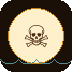

<!DOCTYPE html>
<html lang="fr">
<head>
<meta charset="UTF-8"/>
<meta name="viewport" content="width=device-width,initial-scale=1,maximum-scale=1,user-scalable=no"/>
<title>Trésor Pirate  — Lac du Der</title>

<!-- PWA Manifest -->
<link rel="manifest" href="manifest.json"/>

<!-- iOS PWA support -->
<meta name="apple-mobile-web-app-capable" content="yes"/>
<meta name="apple-mobile-web-app-status-bar-style" content="black-translucent"/>
<meta name="apple-mobile-web-app-title" content="Trésor Pirate"/>
<link rel="apple-touch-icon" sizes="152x152" href="icons/icon-152.png"/>
<link rel="apple-touch-icon" sizes="192x192" href="icons/icon-192.png"/>

<!-- Android / Chrome -->
<meta name="mobile-web-app-capable" content="yes"/>
<meta name="theme-color" content="#4a2510"/>
<link rel="icon" type="image/png" sizes="192x192" href="icons/icon-192.png"/>
<link rel="icon" type="image/png" sizes="512x512" href="icons/icon-512.png"/>

<!-- SEO / partage -->
<meta name="description" content="Jeu de chasse au trésor GPS sur le Lac du Der avec le Capitaine Francis BlackWood"/>
<meta name="application-name" content="TrésorPirate"/>

<link rel="preconnect" href="https://fonts.googleapis.com"/>
<link rel="preconnect" href="https://fonts.gstatic.com" crossorigin/>
<link href="https://fonts.googleapis.com/css2?family=Pirata+One&family=IM+Fell+English:ital@0;1&display=swap" rel="stylesheet"/>
<!-- Leaflet -->
<link rel="stylesheet" href="https://cdnjs.cloudflare.com/ajax/libs/leaflet/1.9.4/leaflet.min.css"/>
<script src="https://cdnjs.cloudflare.com/ajax/libs/leaflet/1.9.4/leaflet.min.js"></script>
<!-- React -->
<script src="https://cdnjs.cloudflare.com/ajax/libs/react/18.3.1/umd/react.production.min.js"></script>
<script src="https://cdnjs.cloudflare.com/ajax/libs/react-dom/18.3.1/umd/react-dom.production.min.js"></script>
<style>
*,*::before,*::after{box-sizing:border-box;margin:0;padding:0}
html,body{height:100%;overflow-x:hidden}
body{
  font-family:"IM Fell English",Georgia,serif;
  min-height:100vh;
  background-color:#160b05;
  background-image:
    radial-gradient(circle at 20% 20%,rgba(255,226,179,.22),transparent 55%),
    radial-gradient(circle at 80% 0%,rgba(255,239,195,.12),transparent 60%),
    radial-gradient(circle at 0% 100%,rgba(70,34,9,.4),transparent 55%),
    linear-gradient(120deg,rgba(44,23,9,.95),rgba(19,9,4,.95));
  background-attachment:fixed;
  color:#3d1a0a;
}
body::after{content:"";position:fixed;inset:0;background:radial-gradient(circle at center,rgba(0,0,0,.4),transparent 65%);pointer-events:none;z-index:0;mix-blend-mode:multiply}
#root{position:relative;z-index:1}
h1,h2,h3,h4{font-family:"Pirata One","IM Fell English",serif;letter-spacing:.06em;color:#4a2510;text-shadow:0 3px 10px rgba(12,6,3,.4)}
input,button,textarea{font-family:"IM Fell English",serif}
::selection{background:#9a3412;color:#fff8e1}
input[type=range]{width:100%;accent-color:#b8731b;cursor:pointer}
input[type=text]{width:100%;font-family:"IM Fell English",serif;font-size:1rem;color:#3b1b0b;background:rgba(255,255,255,.65);border:1.5px solid rgba(73,38,13,.8);border-radius:12px;padding:.7rem 1rem;outline:none;transition:border-color .15s}
input[type=text]:focus{border-color:#b8731b}
input[type=text]::placeholder{color:#8a6040}

/* ── Leaflet map wrapper ── */
#live-map-leaflet{
  width:100%;
  height:320px;
  border-radius:14px;
  overflow:hidden;
  border:2px solid rgba(64,32,12,.5);
  box-shadow:0 6px 24px rgba(0,0,0,.35),inset 0 0 0 1px rgba(255,220,140,.15);
  position:relative;
  z-index:0;
}
/* Filtre CSS "vieille carte" sur les tuiles — désactivé pour meilleure lisibilité */
.leaflet-tile-pane{
  filter: none;
}
/* Cadre style carte ancienne — sans filtres sur les tuiles */
#live-map-leaflet::after{
  content:"";
  position:absolute;inset:0;
  pointer-events:none;
  z-index:500;
  box-shadow: inset 0 0 0 2px rgba(92,44,10,.6);
  border-radius:12px;
}
/* Vignette légère sur les bords */
#live-map-leaflet::before{
  content:"";
  position:absolute;inset:0;
  pointer-events:none;
  z-index:501;
  background:radial-gradient(ellipse at center,transparent 70%,rgba(40,20,5,.2) 100%);
  border-radius:12px;
}
/* Badge GPS */
.map-badge{
  position:absolute;top:8px;left:10px;z-index:600;
  display:flex;align-items:center;gap:5px;
  background:rgba(253,240,203,.92);
  border:1.5px solid rgba(100,60,20,.4);
  border-radius:99px;padding:3px 11px;
  font-family:"Pirata One",serif;font-size:.72rem;font-weight:700;letter-spacing:.05em;
  pointer-events:none;
  box-shadow:0 2px 8px rgba(0,0,0,.25);
}
.map-badge-dot{width:7px;height:7px;border-radius:50%;display:inline-block;flex-shrink:0}
@keyframes pulse{0%,100%{opacity:1;transform:scale(1)}50%{opacity:.5;transform:scale(.8)}}
.map-badge-dot.active{animation:pulse 1.8s ease infinite}

/* Légende pirate */
.map-legend{
  position:absolute;bottom:8px;left:8px;z-index:600;
  background:rgba(253,240,203,.9);
  border:1px solid rgba(100,60,20,.35);
  border-radius:8px;
  padding:5px 9px;
  font-family:"IM Fell English",serif;font-size:.68rem;color:#4a2510;
  pointer-events:none;
  box-shadow:0 2px 8px rgba(0,0,0,.2);
  display:flex;flex-direction:column;gap:3px;
}
.map-legend-row{display:flex;align-items:center;gap:5px}

/* Avertissement hors zone */
.map-outside-warn{
  position:absolute;bottom:8px;right:8px;z-index:600;
  background:rgba(139,0,0,.88);color:#fef3c7;
  border-radius:8px;padding:4px 10px;
  font-family:"Pirata One",serif;font-size:.7rem;font-weight:700;
  box-shadow:0 2px 8px rgba(0,0,0,.3);
  pointer-events:none;
}

/* Marqueurs personnalisés Leaflet */
.lf-marker-boat{
  background:transparent!important;border:none!important;
}
.lf-marker-wp{
  background:transparent!important;border:none!important;
}

/* Compass */
.compass-wrap{position:relative;width:240px;height:240px;flex-shrink:0}
/* Cadran extérieur — tourne avec le cap du téléphone */
.compass-dial{position:absolute;inset:0;transition:transform .35s ease-out}
/* Boîtier fixe */
.compass-body{position:absolute;inset:0;border-radius:50%;
  border:10px solid #2b1608;
  background:radial-gradient(circle at 30% 30%,rgba(255,255,255,.4),transparent 40%),
             linear-gradient(145deg,#fdebc8,#e2b877 55%,#b37230);
  box-shadow:inset 0 0 40px rgba(0,0,0,.45),0 18px 36px rgba(0,0,0,.55);
  pointer-events:none}
/* Centre de pivot */
.compass-pivot{position:absolute;top:50%;left:50%;
  transform:translate(-50%,-50%);
  width:22px;height:22px;border-radius:50%;
  background:radial-gradient(circle,#fff8e6,#deb270 55%,#8c4b1a);
  border:3px solid #3b1b0b;
  box-shadow:inset 0 0 8px rgba(0,0,0,.4),0 3px 6px rgba(0,0,0,.3);
  z-index:10;pointer-events:none}

/* Cards */
.card{position:relative;border-radius:28px;border:2px solid rgba(77,45,17,.75);background:linear-gradient(145deg,#fdf0cb,#f3d39e 45%,#d5a15d);box-shadow:0 22px 40px rgba(0,0,0,.5),inset 0 0 55px rgba(255,255,255,.1);color:#2f1506;overflow:hidden}
.card::before{content:"";position:absolute;inset:0;background-image:radial-gradient(circle at 30% 20%,rgba(255,255,255,.3),transparent 45%);opacity:.3;mix-blend-mode:multiply;pointer-events:none}
.card::after{content:"";position:absolute;inset:9px;border-radius:24px;border:1px dashed rgba(64,32,12,.25);pointer-events:none}
.card>*{position:relative;z-index:1}
.card-hero{background:linear-gradient(180deg,#fef8e6,#f8e7c0 55%,#efcb95);box-shadow:0 28px 48px rgba(0,0,0,.55),inset 0 0 60px rgba(255,255,255,.18)}
.btn{display:flex;align-items:center;justify-content:center;cursor:pointer;border:none;font-family:"IM Fell English",serif;transition:transform .14s,box-shadow .14s}
.btn-gold{border-radius:9999px;background:linear-gradient(120deg,#b8731b,#f7c560 52%,#e19c2a);color:#2c1203;font-weight:600;letter-spacing:.06em;text-transform:uppercase;padding:.75rem 1.5rem;font-size:.9rem;box-shadow:0 12px 22px rgba(0,0,0,.4),inset 0 2px 0 rgba(255,255,255,.3)}
.btn-gold:hover{transform:translateY(-2px);box-shadow:0 18px 28px rgba(0,0,0,.5)}
.btn-ghost{border-radius:9999px;border:1.5px solid rgba(200,160,100,.6);background:transparent;color:#4a2510;padding:.65rem 1.5rem;font-size:.88rem;letter-spacing:.04em}
.btn-ghost:hover{border-color:rgba(200,160,100,.9);transform:translateY(-1px)}
.bubble{position:relative;border-radius:18px;border:2px solid rgba(64,32,12,.3);background:rgba(255,244,212,.9);color:#3b1b0b;padding:1rem 1.5rem;font-style:italic;box-shadow:inset 0 1px 0 rgba(255,255,255,.5),0 10px 22px rgba(0,0,0,.18)}
.bubble::after{content:"";position:absolute;bottom:-16px;left:32px;border-width:16px 12px 0;border-style:solid;border-color:rgba(255,244,212,.9) transparent transparent;filter:drop-shadow(0 2px 2px rgba(64,32,12,.3))}
.progress-track{height:8px;border-radius:99px;background:rgba(58,33,15,.18);overflow:hidden}
.progress-fill{height:100%;border-radius:99px;background:linear-gradient(to right,#fbbf24,#f97316);transition:width .5s ease}

/* Animations d'alerte compte à rebours */
@keyframes pulseRed {
  0%,100% { opacity:1; }
  50%      { opacity:.6; }
}
@keyframes pulseOrange {
  0%,100% { opacity:1; }
  50%      { opacity:.7; }
}

/* Leaflet attribution override */
.leaflet-control-attribution{
  font-size:.6rem!important;
  background:rgba(253,240,203,.75)!important;
  color:#4a2510!important;
}
.leaflet-control-zoom a{
  font-family:"Pirata One",serif!important;
  color:#4a2510!important;
  background:rgba(253,240,203,.92)!important;
  border-color:rgba(100,60,20,.4)!important;
}
</style>
</head>
<body>
<div id="root"></div>
<script>
const {
  useState,
  useEffect,
  useRef,
  useMemo,
  useCallback
} = React;

/* ================================================================
   CONSTANTES
   ================================================================ */
const PLAY_ZONE = [{
  lat: 48.553312,
  lng: 4.780565
}, {
  lat: 48.547617,
  lng: 4.781299
}, {
  lat: 48.550361,
  lng: 4.791750
}, {
  lat: 48.554617,
  lng: 4.787888
}];
const CENTER = {
  lat: (48.553312 + 48.547617 + 48.550361 + 48.554617) / 4,
  lng: (4.780565 + 4.781299 + 4.791750 + 4.787888) / 4
};
const BOUNDS = (() => {
  const lats = PLAY_ZONE.map(p => p.lat),
    lngs = PLAY_ZONE.map(p => p.lng);
  return {
    minLat: Math.min(...lats),
    maxLat: Math.max(...lats),
    minLng: Math.min(...lngs),
    maxLng: Math.max(...lngs)
  };
})();
const LEVELS = {
  easy: {
    label: "Facile",
    duration: 30,
    points: 3,
    blurb: "3 balises · idéal en famille",
    emoji: "⚓",
    estMin: 35,
    estMax: 55,
    estNote: "Navigation tranquille, idéale pour découvrir le lac."
  },
  normal: {
    label: "Normal",
    duration: 45,
    points: 4,
    blurb: "4 balises · pour les explorateurs",
    emoji: "🗺️",
    estMin: 50,
    estMax: 75,
    estNote: "Bon rythme d'exploration avec quelques défis."
  },
  expert: {
    label: "Expert",
    duration: 60,
    points: 5,
    blurb: "5 balises · énigmes corsées",
    emoji: "💀",
    estMin: 70,
    estMax: 100,
    estNote: "Parcours sportif — prévoir du temps pour les énigmes."
  }
};
const RENTAL_OPTIONS = [{
  label: "1 h 00",
  minutes: 60,
  emoji: "🕐"
}, {
  label: "1 h 30",
  minutes: 90,
  emoji: "🕑"
}, {
  label: "2 h 00",
  minutes: 120,
  emoji: "🕒"
}];
const FINAL_WORDS = {
  3: [{
    word: "DER",
    hints: ["Nom du lac bâti par l'homme pour calmer les crues.", "On le prononce comme un ordre bref du Capitaine."]
  }, {
    word: "EAU",
    hints: ["Elle t'entoure du départ jusqu'au coffre maudit.", "Miroir au matin, vagues au vent d'après-midi."]
  }, {
    word: "LAC",
    hints: ["Mot simple qui décrit tout le terrain de jeu.", "Il rime avec le bruit des pagaies qui claquent."]
  }, {
    word: "ILE",
    hints: ["Fragment de forêt posé sur la surface, interdit aux intrus.", "Archipel secret pour les oiseaux nicheurs."]
  }, {
    word: "NID",
    hints: ["Les grues y déposent leurs trésors dans les roseaux.", "Cocon qui flotte parfois au ras de l'eau."]
  }],
  4: [{
    word: "VENT",
    hints: ["Invisible, il gonfle les voiles des pédalos.", "Il gifle ton visage quand tu prends de la vitesse."]
  }, {
    word: "ONDE",
    hints: ["Elle voyage en cercles après chaque éclaboussure.", "Elle transmet le message des bouées virtuelles."]
  }, {
    word: "GRUE",
    hints: ["Immense voyageuse qui dessine un V dans le ciel.", "Son cri rauque annonce l'automne sur le lac."]
  }, {
    word: "ILOT",
    hints: ["Petit coin de verdure isolé par les flots.", "On le contourne pour respecter les nichées secrètes."]
  }, {
    word: "CANE",
    hints: ["Compagne du colvert, elle glisse sans bruit dans les roseaux.", "Elle laisse un sillage en arabesque sur l'eau."]
  }, {
    word: "PONTON",
    tokens: ["PO", "N", "TO", "N"],
    hints: ["Lieu où les navires viennent se reposer.", "Le premier pas avant d'embarquer."]
  }],
  5: [{
    word: "RAMES",
    hints: ["Sans elles, impossible de diriger le pédalo.", "Elles frappent l'eau comme un tambour pirate."]
  }, {
    word: "VAGUE",
    hints: ["Elle roule vers la rive en portant tes indices.", "Elle se forme quand le vent souffle trop fort."]
  }, {
    word: "FAUNE",
    hints: ["Rassemble en un mot tous les animaux du lac.", "On l'étudie pour protéger grues, cormorans et hérons."]
  }, {
    word: "ALGUE",
    hints: ["Je danse sous la surface et oxygène l'eau.", "Je chatouille les pieds des navigateurs inattentifs."]
  }, {
    word: "FLORE",
    hints: ["Je regroupe toutes les plantes qui parfument les berges.", "Je cache les passerelles secrètes dans les saules."]
  }, {
    word: "GRUES",
    hints: ["Immenses voyageuses posées sur le lac au crépuscule.", "Elles battent des ailes avant la migration."]
  }, {
    word: "BRUME",
    hints: ["Je me lève à l'aube et voile l'horizon.", "Je force les pirates à se fier à la boussole."]
  }, {
    word: "SAULE",
    hints: ["Arbre aux branches souples qui effleurent l'eau.", "Il abrite poissons et têtards dans leur nursery."]
  }, {
    word: "CARPE",
    hints: ["Poisson massif qui fouille la vase.", "On devine sa présence grâce aux bulles qui remontent."]
  }, {
    word: "HERON",
    hints: ["Sentinelle grise immobile sur ses longues pattes.", "Il plonge son bec comme une lance pour pêcher."]
  }]
};
const RIDDLES = [{
  id: "r1",
  theme: "Roseaux",
  prompt: "Je plie sous le vent mais ne romps jamais. Qui suis-je lorsque je chante en vert au bord du lac ?",
  answers: ["roseau", "roseaux"],
  clue: "Cherche les silhouettes dorées qui dépassent de l'eau.",
  rewardHint: "Les roseaux murmurent une lettre secrète."
}, {
  id: "r2",
  theme: "Vent",
  prompt: "Je suis invisible mais gonfle les voiles et fais danser les vagues. Que suis-je ?",
  answers: ["vent"],
  clue: "Observe la crête des vaguelettes pour garder le cap.",
  rewardHint: "Un souffle révèle un symbole."
}, {
  id: "r3",
  theme: "Eau",
  prompt: "Je reflète le ciel le jour et les étoiles la nuit. Pourtant je ne suis pas un miroir en verre.",
  answers: ["eau", "lac", "surface"],
  clue: "Plus l'eau est calme, plus tu te rapproches.",
  rewardHint: "La surface lisse cache une lettre."
}, {
  id: "r4",
  theme: "Bouées",
  prompt: "Je garde les aventuriers sur la bonne trajectoire sans être visible. Je suis virtuel.",
  answers: ["bouee", "bouée", "bouees", "bouées"],
  clue: "Faire confiance à ton écran te mènera à bon port.",
  rewardHint: "Une balise digitale te remet un fragment."
}, {
  id: "r5",
  theme: "Boussole",
  prompt: "Je montre le nord même sans étoiles. Je tourne, mais je guide toujours.",
  answers: ["boussole", "compas"],
  clue: "Garde ton téléphone à plat pour pointer précisément.",
  rewardHint: "L'aiguille libère une lettre flamboyante."
}, {
  id: "r6",
  theme: "Oiseaux",
  prompt: "Nous dessinons des V immenses dans le ciel avant de repartir vers le sud.",
  answers: ["oiseaux", "oiseau", "grues", "grue"],
  clue: "Regarde les nuées pour deviner la prochaine direction.",
  rewardHint: "Le vol collectif t'offre une lettre."
}, {
  id: "r7",
  theme: "Aube",
  prompt: "Je colore l'horizon en or et en rose. J'ouvre la journée des navigateurs.",
  answers: ["aube", "aurore", "lever de soleil"],
  clue: "Le soleil bas t'indique souvent le prochain alignement.",
  rewardHint: "L'aurore grave un caractère dans le coffre."
}, {
  id: "r8",
  theme: "Îlot",
  prompt: "Je suis un morceau de forêt posé sur l'eau. On m'approche mais on ne m'accoste pas toujours.",
  answers: ["ile", "ilot", "île", "îlot"],
  clue: "Contourne-moi, les vagues répercutent l'écho du trésor.",
  rewardHint: "L'île partage sa lettre aux navigateurs prudents."
}, {
  id: "r9",
  theme: "Pirates",
  prompt: "Je détourne les regards, cache mes secrets dans un coffre, et ne cède que devant le bon mot.",
  answers: ["pirate", "pirates"],
  clue: "Les pirates adorent les mots-code.",
  rewardHint: "Le capitaine offre un fragment au moussaillon gagnant."
}, {
  id: "r10",
  theme: "Nénuphars",
  prompt: "Je flotte comme un disque vert et ouvre parfois un coeur doré. J'abrite les têtards.",
  answers: ["nenuphar", "nenuphars", "nénuphar", "nénuphars"],
  clue: "Repère les zones calmes couvertes de feuilles rondes.",
  rewardHint: "Le tapis végétal révèle une lettre parfumée."
}, {
  id: "r11",
  theme: "Grues",
  prompt: "Nous volons en formation en V au-dessus du lac avant de migrer vers le sud.",
  answers: ["grue", "grues", "grue cendree", "grues cendrees"],
  clue: "Écoute les cris perçants venant du ciel.",
  rewardHint: "Leur ombre projette un symbole sur ta carte."
}, {
  id: "r12",
  theme: "Cormoran",
  prompt: "Je plonge longtemps pour pêcher puis je sèche mes ailes en croix. Qui suis-je ?",
  answers: ["cormoran", "cormorans"],
  clue: "Surveille les poteaux où je déploie mes ailes sombres.",
  rewardHint: "Le cormoran laisse tomber une lettre brillante."
}, {
  id: "r13",
  theme: "Héron",
  prompt: "Je reste immobile sur mes longues pattes pour guetter les poissons. Qui suis-je ?",
  answers: ["heron", "herons", "héron", "hérons"],
  clue: "Une silhouette grise et droite t'indique une zone riche.",
  rewardHint: "Le héron confie une lettre au marcheur silencieux."
}, {
  id: "r14",
  theme: "Carpes",
  prompt: "Je suis un poisson massif qui fouille la vase et fait frissonner la surface.",
  answers: ["carpe", "carpes"],
  clue: "Observe les bulles et remous pour trouver la balise.",
  rewardHint: "La carpe fait remonter un caractère brillant."
}, {
  id: "r15",
  theme: "Brume",
  prompt: "Je recouvre le lac au petit matin, voilant les berges et les repères. Qui suis-je ?",
  answers: ["brume", "brouillard"],
  clue: "Quand la brume tombe, avance doucement et suis ta boussole.",
  rewardHint: "Le voile blanc révèle un signe secret."
}, {
  id: "r16",
  theme: "Saules",
  prompt: "Je plonge mes branches souples dans l'eau pour offrir de l'ombre aux poissons.",
  answers: ["saule", "saules", "saule pleureur"],
  clue: "Cherche les arbres qui effleurent l'eau.",
  rewardHint: "Le saule te remet une lettre tombée de ses feuilles."
}, {
  id: "r17",
  theme: "Barrage",
  prompt: "Je retiens les eaux du lac et régule les niveaux pour protéger la vallée.",
  answers: ["barrage", "digue"],
  clue: "Imagine les digues invisibles pour rester dans la zone.",
  rewardHint: "La muraille d'eau te délivre une rune protectrice."
}, {
  id: "r18",
  theme: "Cygne",
  prompt: "Entièrement vêtu de blanc, je glisse avec élégance sans faire de vagues. Mon long cou se courbe comme une lettre.",
  answers: ["cygne", "cygnes"],
  clue: "Cherche la silhouette blanche qui glisse en silence.",
  rewardHint: "Le cygne te confie un fragment de sa grâce."
}, {
  id: "r19",
  theme: "Brochet",
  prompt: "Je suis le chasseur camouflé dans les herbiers, prêt à bondir sur ma proie avec mes dents acérées. On m'appelle le requin d'eau douce.",
  answers: ["brochet", "brochets"],
  clue: "Observe les zones herbues où les poissons évitent de s'aventurer.",
  rewardHint: "Le brochet surgit et te remet un symbole."
}, {
  id: "r20",
  theme: "Libellule",
  prompt: "Mes quatre ailes de dentelle me permettent de rester immobile dans les airs avant de foncer comme un éclair bleu ou vert.",
  answers: ["libellule", "libellules"],
  clue: "Guette les reflets colorés qui volent sur l'eau.",
  rewardHint: "La libellule te dépose une lettre brillante."
}, {
  id: "r21",
  theme: "Chêne",
  prompt: "Arbre roi de la forêt du Der, mon bois est solide et mes fruits, les glands, nourrissent les animaux de la rive.",
  answers: ["chene", "chenes", "chêne", "chênes"],
  clue: "Cherche le grand arbre aux feuilles découpées sur la berge.",
  rewardHint: "Le chêne centenaire te glisse un fragment de bois."
}, {
  id: "r22",
  theme: "Grenouille",
  prompt: "Verte ou brune, je chante en chœur la nuit et je fais des bonds impressionnants pour attraper les insectes.",
  answers: ["grenouille", "grenouilles"],
  clue: "Écoute les chants nocturnes qui montent des roseaux.",
  rewardHint: "La grenouille te lance une lettre du bout de sa langue."
}, {
  id: "r23",
  theme: "Silure",
  prompt: "Je suis le colosse à moustaches qui hante les profondeurs sombres du lac. Je peux mesurer plus de deux mètres.",
  answers: ["silure", "silures"],
  clue: "Regarde les grandes ombres qui passent sous la surface.",
  rewardHint: "Le silure remonte du fond avec un caractère rare."
}, {
  id: "r24",
  theme: "Coucher de soleil",
  prompt: "Je peins le ciel en rouge, orange et violet avant de laisser la place aux étoiles et de faire dormir le lac.",
  answers: ["coucher de soleil", "crepuscule", "crépuscule"],
  clue: "Oriente-toi vers l'ouest quand les couleurs s'enflamment.",
  rewardHint: "Le crépuscule grave un signe doré dans ton coffre."
}, {
  id: "r25",
  theme: "Barque",
  prompt: "Sans moteur ou à la force des bras, je glisse silencieusement sur l'onde pour ne pas effrayer les oiseaux.",
  answers: ["barque", "bateau", "rameur"],
  clue: "Suis les traces que laisse une embarcation légère sur l'eau.",
  rewardHint: "La barque t'apporte un fragment porté par le courant."
}, {
  id: "r26",
  theme: "Vase",
  prompt: "Je suis le tapis mou et sombre du fond du lac où les carpes aiment fouiller pour trouver leur nourriture.",
  answers: ["vase", "limon", "boue"],
  clue: "Observe les bulles qui remontent là où le fond est trouble.",
  rewardHint: "La vase libère un caractère enfoui depuis longtemps."
}, {
  id: "r27",
  theme: "Moustique",
  prompt: "Petit et piquant, je danse au-dessus des eaux stagnantes à la tombée de la nuit, cherchant une cible à piquer.",
  answers: ["moustique", "moustiques"],
  clue: "Méfie-toi des zones calmes où l'eau ne bouge plus.",
  rewardHint: "Le moustique te pique et laisse une lettre dans sa morsure."
}, {
  id: "r28",
  theme: "Canard colvert",
  prompt: "Ma tête est d'un vert brillant et mon bec jaune fouille les herbiers. On entend mon \"coin-coin\" de loin.",
  answers: ["canard", "colvert", "canards"],
  clue: "Repère le coin-coin qui résonne parmi les roseaux.",
  rewardHint: "Le colvert plonge la tête et remonte un fragment."
}, {
  id: "r29",
  theme: "Sable",
  prompt: "Je suis fait de milliers de grains d'or et j'accueille les châteaux des enfants sur les plages du lac l'été.",
  answers: ["sable", "plage"],
  clue: "Cherche là où le lac effleure la terre en douceur.",
  rewardHint: "Un grain de sable cache une lettre minuscule."
}, {
  id: "r30",
  theme: "Ragondin",
  prompt: "On me prend souvent pour un gros rat ou un castor, je nage en laissant juste mon museau et mes petites oreilles dépasser.",
  answers: ["ragondin", "ragondins"],
  clue: "Guette les petites têtes rondes qui traversent la surface.",
  rewardHint: "Le ragondin te tend un fragment depuis la berge."
}, {
  id: "r31",
  theme: "Pêcheur",
  prompt: "Je reste patient pendant des heures sur la rive ou mon bateau, une canne à la main, espérant que le bouchon coule.",
  answers: ["pecheur", "pecheurs", "pêcheur", "pêcheurs"],
  clue: "Cherche l'homme immobile face à l'eau, concentré en silence.",
  rewardHint: "Le pêcheur sort une lettre de sa boîte à appâts."
}, {
  id: "r32",
  theme: "Lune",
  prompt: "Mon reflet d'argent danse sur les vagues sombres du lac quand les grues se sont enfin tues.",
  answers: ["lune", "pleine lune"],
  clue: "Navigue de nuit et laisse-toi guider par mon miroir argenté.",
  rewardHint: "La lune grave un symbole lunaire sur ta carte."
}, {
  id: "r33",
  theme: "Algues",
  prompt: "Longues chevelures vertes cachées sous la surface, nous formons une forêt immergée où se cachent les petits poissons.",
  answers: ["algue", "algues"],
  clue: "Regarde sous la surface là où l'eau prend une teinte verte.",
  rewardHint: "Les algues t'offrent une lettre venue des profondeurs."
}];
const SK = "lacder-pirate-records";
const EMPTY_REC = {
  easy: null,
  normal: null,
  expert: null
};
const CAPTAIN = "Capitaine Francis BlackWood";

/* ================================================================
   UTILITAIRES
   ================================================================ */
const toRad = d => d * Math.PI / 180;
const toDeg = r => r * 180 / Math.PI;
function havDist(a, b) {
  const R = 6371e3,
    dL = toRad(b.lat - a.lat),
    dN = toRad(b.lng - a.lng);
  const s = Math.sin(dL / 2) ** 2 + Math.cos(toRad(a.lat)) * Math.cos(toRad(b.lat)) * Math.sin(dN / 2) ** 2;
  return R * 2 * Math.atan2(Math.sqrt(s), Math.sqrt(1 - s));
}
function bearing(f, t) {
  const la1 = toRad(f.lat),
    la2 = toRad(t.lat),
    dl = toRad(t.lng - f.lng);
  return (toDeg(Math.atan2(Math.sin(dl) * Math.cos(la2), Math.cos(la1) * Math.sin(la2) - Math.sin(la1) * Math.cos(la2) * Math.cos(dl))) + 360) % 360;
}
function lerp(a, b, t) {
  const c = Math.min(1, Math.max(0, t));
  return {
    lat: a.lat + (b.lat - a.lat) * c,
    lng: a.lng + (b.lng - a.lng) * c
  };
}
function inPoly(p, poly) {
  let ins = false;
  for (let i = 0, j = poly.length - 1; i < poly.length; j = i++) {
    const xi = poly[i].lng,
      yi = poly[i].lat,
      xj = poly[j].lng,
      yj = poly[j].lat;
    if (yi > p.lat !== yj > p.lat && p.lng < (xj - xi) * (p.lat - yi) / (yj - yi) + xi) ins = !ins;
  }
  return ins;
}
function rnd(a, b) {
  return Math.random() * (b - a) + a;
}
function shuffle(a) {
  const r = [...a];
  for (let i = r.length - 1; i > 0; i--) {
    const j = Math.floor(Math.random() * (i + 1));
    [r[i], r[j]] = [r[j], r[i]];
  }
  return r;
}
function randInPoly(poly) {
  const lats = poly.map(p => p.lat),
    lngs = poly.map(p => p.lng);
  const [ml, xl] = [Math.min(...lats), Math.max(...lats)],
    [mn, xn] = [Math.min(...lngs), Math.max(...lngs)];
  for (let i = 0; i < 100; i++) {
    const c = {
      lat: rnd(ml, xl),
      lng: rnd(mn, xn)
    };
    if (inPoly(c, poly)) return c;
  }
  return poly[0];
}
function splitWord(w, n) {
  const s = w.replace(/\s+/g, "");
  if (s.length === n) return s.split("");
  if (s.length < n) return s.padEnd(n, s[s.length - 1]).split("").slice(0, n);
  const base = Math.floor(s.length / n),
    rem = s.length % n,
    out = [];
  let c = 0;
  for (let i = 0; i < n; i++) {
    const sz = base + (i < rem ? 1 : 0);
    out.push(s.slice(c, c + sz));
    c += sz;
  }
  return out;
}
function norm(v) {
  return v.toLowerCase().normalize("NFD").replace(/[\u0300-\u036f]/g, "").replace(/[^a-z]/g, "");
}
function matchAns(e, arr) {
  const c = norm(e);
  return arr.some(a => norm(a) === c);
}
function fmtTime(ms) {
  if (!ms || isNaN(ms)) return "00:00";
  const s = Math.max(0, Math.floor(ms / 1000));
  return `${String(Math.floor(s / 60)).padStart(2, "0")}:${String(s % 60).padStart(2, "0")}`;
}

/* ================================================================
   COMPOSANT CARTE LEAFLET
   ================================================================ */
function PirateMap({
  mapId,
  points,
  activeIdx,
  solvedIds,
  userPos,
  isOutside,
  hasGps,
  stage,
  returning = false
}) {
  const mapRef = useRef(null);
  const boatRef = useRef(null);
  const wpsRef = useRef([]);
  const zoneRef = useRef(null);
  const routeRef = useRef(null);
  const capRef = useRef(null);
  const wakeRef = useRef(null);
  const wakePts = useRef([]);
  const startMkRef = useRef(null); // marqueur départ clignotant (phase returning)

  /* Icône bateau */
  const makeBoatIcon = useCallback(angleDeg => {
    const svg = `<svg xmlns="http://www.w3.org/2000/svg" width="40" height="40" viewBox="-20 -20 40 40">
      <g transform="rotate(${angleDeg})">
        <ellipse rx="6" ry="3.5" cy="2" fill="#1e3a5f" stroke="#60a5fa" stroke-width="1"/>
        <line x1="0" y1="1.5" x2="0" y2="-13" stroke="#94a3b8" stroke-width="1.2"/>
        <path d="M0 -12 L7 0 L0 1Z" fill="#fef3c7" fill-opacity=".95" stroke="#c8a97e" stroke-width=".6"/>
        <rect x="0" y="-14" width="5.5" height="3" rx=".6" fill="#1a1008"/>
        <text x="2.75" y="-11.2" text-anchor="middle" font-size="3" fill="#fef3c7" font-family="serif">☠</text>
      </g>
      <circle r="2" fill="#93c5fd"/>
      <circle r="9" fill="#3b82f6" fill-opacity=".15" stroke="none">
        <animate attributeName="r" values="6;12;6" dur="1.8s" repeatCount="indefinite"/>
        <animate attributeName="fill-opacity" values=".25;0;.25" dur="1.8s" repeatCount="indefinite"/>
      </circle>
    </svg>`;
    return L.divIcon({
      html: svg,
      className: "lf-marker-boat",
      iconSize: [40, 40],
      iconAnchor: [20, 20]
    });
  }, []);

  /* Icône point de départ pulsant (phase returning) */
  const makeStartIcon = useCallback(() => {
    const svg = `<svg xmlns="http://www.w3.org/2000/svg" width="48" height="48" viewBox="-24 -24 48 48">
      <circle r="20" fill="#fbbf24" fill-opacity=".25" stroke="none">
        <animate attributeName="r" values="14;22;14" dur="1.4s" repeatCount="indefinite"/>
        <animate attributeName="fill-opacity" values=".35;.05;.35" dur="1.4s" repeatCount="indefinite"/>
      </circle>
      <circle r="13" fill="#fef3c7" stroke="#92400e" stroke-width="2.5"/>
      <text x="0" y="5" text-anchor="middle" font-size="14" fill="#b45309" font-family="serif">★</text>
      <text x="0" y="22" text-anchor="middle" font-size="5" fill="#5c2d0f" font-family="Pirata One,serif">Départ</text>
    </svg>`;
    return L.divIcon({
      html: svg,
      className: "lf-marker-boat",
      iconSize: [48, 48],
      iconAnchor: [24, 24]
    });
  }, []);

  /* Icône waypoint */
  const makeWpIcon = useCallback((label, isCurrent, isSolved) => {
    const fill = isSolved ? "#14532d" : isCurrent ? "#b45309" : "#3b1b0b";
    const stroke = isSolved ? "#86efac" : isCurrent ? "#fde68a" : "#fef3c7";
    const txt = isSolved ? "✓" : String(label);
    const pulse = isCurrent && !isSolved ? `<circle r="20" fill="#fbbf24" fill-opacity=".5" stroke="none"><animate attributeName="r" values="14;22;14" dur="2s" repeatCount="indefinite"/><animate attributeName="fill-opacity" values=".5;.1;.5" dur="2s" repeatCount="indefinite"/></circle>` : "";
    const svg = `<svg xmlns="http://www.w3.org/2000/svg" width="36" height="36" viewBox="-18 -18 36 36">
      ${pulse}
      <circle r="10" fill="${fill}" stroke="${stroke}" stroke-width="2"/>
      <text x="0" y="3.5" text-anchor="middle" font-size="${isSolved ? 11 : 9}" fill="${stroke}" font-family="Pirata One,serif" font-weight="bold">${txt}</text>
    </svg>`;
    return L.divIcon({
      html: svg,
      className: "lf-marker-wp",
      iconSize: [36, 36],
      iconAnchor: [18, 18]
    });
  }, []);

  /* Initialisation de la carte */
  useEffect(() => {
    if (mapRef.current) return; // déjà initialisée
    const el = document.getElementById(mapId);
    if (!el) return;
    const map = L.map(el, {
      center: [CENTER.lat, CENTER.lng],
      zoom: 14,
      zoomControl: true,
      attributionControl: true
    });

    /* Tuile CartoDB Voyager — rendu neutre et propre, filtre CSS fait le travail pirate */
    L.tileLayer('https://{s}.basemaps.cartocdn.com/rastertiles/voyager/{z}/{x}/{y}{r}.png', {
      attribution: '&copy; <a href="https://www.openstreetmap.org/copyright">OSM</a> &copy; <a href="https://carto.com/">CARTO</a>',
      subdomains: 'abcd',
      maxZoom: 19
    }).addTo(map);

    /* Couverture bleue sur toute la carte pour simuler l'eau (masquée hors zone) */
    L.rectangle([[BOUNDS.minLat - 0.02, BOUNDS.minLng - 0.02], [BOUNDS.maxLat + 0.02, BOUNDS.maxLng + 0.02]], {
      color: 'transparent',
      weight: 0,
      fillColor: '#7aadcc',
      fillOpacity: .18
    }).addTo(map);

    /* Zone de jeu — liseré épais + remplissage clair style vieille carte */
    const zone = L.polygon(PLAY_ZONE.map(p => [p.lat, p.lng]), {
      color: '#5c2c0a',
      weight: 3.5,
      opacity: 1,
      fillColor: '#a8c8e0',
      fillOpacity: .55,
      dashArray: '7 4',
      lineJoin: 'round'
    }).addTo(map);
    zoneRef.current = zone;

    /* Zoom sur la zone */
    map.fitBounds(zone.getBounds(), {
      padding: [30, 30]
    });
    mapRef.current = map;
    return () => {
      map.remove();
      mapRef.current = null;
    };
  }, [mapId]);

  /* Mise à jour des waypoints */
  useEffect(() => {
    const map = mapRef.current;
    if (!map) return;

    /* Supprimer anciens marqueurs */
    wpsRef.current.forEach(m => m.remove());
    wpsRef.current = [];

    /* Supprimer ancien tracé */
    if (routeRef.current) {
      routeRef.current.remove();
      routeRef.current = null;
    }
    if (capRef.current) {
      capRef.current.remove();
      capRef.current = null;
    }
    if (!points.length) return;

    /* Marqueur permanent du ponton de départ ★ */
    const deptSvg = `<svg xmlns="http://www.w3.org/2000/svg" width="38" height="46" viewBox="-19 -32 38 46">
      <circle r="11" fill="#fef3c7" stroke="#92400e" stroke-width="2"/>
      <text x="0" y="4" text-anchor="middle" font-size="12" fill="#b45309" font-family="serif">★</text>
      <text x="0" y="18" text-anchor="middle" font-size="5" fill="#5c2d0f" font-family="Pirata One,serif">Départ</text>
    </svg>`;
    const deptIcon = L.divIcon({
      html: deptSvg,
      className: "lf-marker-boat",
      iconSize: [38, 46],
      iconAnchor: [19, 32]
    });
    const deptMk = L.marker([PLAY_ZONE[0].lat, PLAY_ZONE[0].lng], {
      icon: deptIcon,
      zIndexOffset: 500
    }).bindPopup('<div style="font-family:Pirata One,serif;color:#4a2510;font-size:.85rem;padding:4px">⚓ Ponton de départ</div>').addTo(map);
    wpsRef.current.push(deptMk);

    /* Tracé : ponton → balise 1 → balise 2 → … (reprend la logique SVG originale) */
    const fullRoute = [[PLAY_ZONE[0].lat, PLAY_ZONE[0].lng], ...points.map(p => [p.location.lat, p.location.lng])];
    routeRef.current = L.polyline(fullRoute, {
      color: '#7a3912',
      weight: 2.5,
      opacity: .65,
      dashArray: '8 5'
    }).addTo(map);

    /* Ligne verte spéciale ponton → balise 1 (comme dans l'original SVG) */
    const greenLeg = L.polyline([[PLAY_ZONE[0].lat, PLAY_ZONE[0].lng], [points[0].location.lat, points[0].location.lng]], {
      color: '#15803d',
      weight: 2.5,
      opacity: .8,
      dashArray: '5 4'
    }).addTo(map);
    wpsRef.current.push(greenLeg);

    /* Marqueurs waypoints */
    points.forEach((pt, idx) => {
      const isSolved = solvedIds.includes(pt.id);
      const isCurrent = idx === activeIdx;
      const icon = makeWpIcon(idx + 1, isCurrent, isSolved);

      /* Popup pirate */
      const pop = L.popup({
        className: 'pirate-popup'
      }).setContent(`<div style="font-family:Pirata One,serif;color:#4a2510;font-size:.85rem;padding:4px 2px">
          <div style="font-weight:700;margin-bottom:3px">Balise ${idx + 1}</div>
          <div style="font-family:IM Fell English,serif;font-size:.78rem;color:#593018">${isSolved ? "✓ Validée" : isCurrent ? "⚓ En cours" : "À venir"}</div>
        </div>`);
      const mk = L.marker([pt.location.lat, pt.location.lng], {
        icon
      }).bindPopup(pop).addTo(map);
      wpsRef.current.push(mk);
    });

    /* Ligne de cap bateau → balise active */
    if (userPos && points[activeIdx] && !solvedIds.includes(points[activeIdx].id)) {
      const tgt = points[activeIdx];
      capRef.current = L.polyline([[userPos.lat, userPos.lng], [tgt.location.lat, tgt.location.lng]], {
        color: '#fbbf24',
        weight: 2,
        opacity: .8,
        dashArray: '5 4'
      }).addTo(map);
    }
  }, [points, activeIdx, solvedIds, userPos, makeWpIcon]);

  /* Mise à jour position bateau */
  useEffect(() => {
    const map = mapRef.current;
    if (!map || !userPos) return;

    /* Sillage */
    wakePts.current.push([userPos.lat, userPos.lng]);
    if (wakePts.current.length > 30) wakePts.current.shift();
    if (wakeRef.current) {
      wakeRef.current.remove();
    }
    if (wakePts.current.length > 1) {
      wakeRef.current = L.polyline(wakePts.current, {
        color: '#60a5fa',
        weight: 3,
        opacity: .55,
        dashArray: '4 3'
      }).addTo(map);
    }

    /* Angle vers la balise cible */
    let angleDeg = 0;
    if (points[activeIdx] && !solvedIds.includes(points[activeIdx].id)) {
      angleDeg = bearing(userPos, points[activeIdx].location);
    }

    /* Marqueur bateau */
    const icon = makeBoatIcon(angleDeg);
    if (boatRef.current) {
      boatRef.current.setLatLng([userPos.lat, userPos.lng]);
      boatRef.current.setIcon(icon);
    } else {
      boatRef.current = L.marker([userPos.lat, userPos.lng], {
        icon,
        zIndexOffset: 1000
      }).addTo(map);
    }

    /* Cercle de précision */
    /* On ne crée pas de cercle statique séparé pour éviter la surcharge visuelle
       Le halo SVG du marqueur le représente implicitement */
  }, [userPos, points, activeIdx, solvedIds, makeBoatIcon]);

  /* Réinitialiser sillage quand la balise change */
  useEffect(() => {
    wakePts.current = [];
  }, [activeIdx]);

  /* Marqueur ★ départ — visible uniquement en phase returning */
  useEffect(() => {
    const map = mapRef.current;
    if (!map) return;
    if (returning) {
      if (!startMkRef.current) {
        startMkRef.current = L.marker([PLAY_ZONE[0].lat, PLAY_ZONE[0].lng], {
          icon: makeStartIcon(),
          zIndexOffset: 900
        }).addTo(map);
      }
      /* Tracer la ligne de retour depuis la position actuelle */
      if (capRef.current) {
        capRef.current.remove();
        capRef.current = null;
      }
      if (userPos) {
        capRef.current = L.polyline([[userPos.lat, userPos.lng], [PLAY_ZONE[0].lat, PLAY_ZONE[0].lng]], {
          color: '#fbbf24',
          weight: 2.5,
          opacity: .85,
          dashArray: '6 4'
        }).addTo(map);
      }
    } else {
      if (startMkRef.current) {
        startMkRef.current.remove();
        startMkRef.current = null;
      }
    }
  }, [returning, userPos, makeStartIcon]);

  /* Nettoyage bateau quand plus de position */
  useEffect(() => {
    if (!userPos && boatRef.current) {
      boatRef.current.remove();
      boatRef.current = null;
    }
  }, [userPos]);

  /* Centrage automatique sur le bateau en mode terrain */
  useEffect(() => {
    const map = mapRef.current;
    if (!map || !userPos) return;
    /* Seulement si hors du viewport visible */
    if (!map.getBounds().contains([userPos.lat, userPos.lng])) {
      map.panTo([userPos.lat, userPos.lng], {
        animate: true,
        duration: .8
      });
    }
  }, [userPos]);
  return /*#__PURE__*/React.createElement("div", {
    style: {
      position: "relative"
    }
  }, /*#__PURE__*/React.createElement("div", {
    id: mapId,
    style: {
      width: "100%",
      height: 320,
      borderRadius: 14,
      overflow: "hidden"
    }
  }), /*#__PURE__*/React.createElement("div", {
    className: "map-badge"
  }, /*#__PURE__*/React.createElement("span", {
    className: `map-badge-dot ${hasGps && !isOutside ? "active" : ""}`,
    style: {
      background: isOutside ? "#c0392b" : hasGps ? "#27ae60" : "#e67e22"
    }
  }), isOutside ? "⚠ Hors zone" : hasGps ? "⚓ GPS actif" : "⏳ Attente GPS"), /*#__PURE__*/React.createElement("div", {
    className: "map-legend"
  }, /*#__PURE__*/React.createElement("div", {
    className: "map-legend-row"
  }, /*#__PURE__*/React.createElement("svg", {
    width: "14",
    height: "14",
    viewBox: "-7 -7 14 14"
  }, /*#__PURE__*/React.createElement("circle", {
    r: "6",
    fill: "#fef3c7",
    stroke: "#92400e",
    strokeWidth: "1.5"
  }), /*#__PURE__*/React.createElement("text", {
    x: "0",
    y: "3",
    textAnchor: "middle",
    fontSize: "7",
    fill: "#b45309"
  }, "\u2605")), /*#__PURE__*/React.createElement("span", null, "Ponton d\xE9part")), /*#__PURE__*/React.createElement("div", {
    className: "map-legend-row"
  }, /*#__PURE__*/React.createElement("svg", {
    width: "12",
    height: "12",
    viewBox: "-6 -6 12 12"
  }, /*#__PURE__*/React.createElement("circle", {
    r: "5",
    fill: "#3b82f6",
    stroke: "#93c5fd",
    strokeWidth: "1"
  })), /*#__PURE__*/React.createElement("span", null, "Embarcation")), /*#__PURE__*/React.createElement("div", {
    className: "map-legend-row"
  }, /*#__PURE__*/React.createElement("svg", {
    width: "12",
    height: "12",
    viewBox: "-6 -6 12 12"
  }, /*#__PURE__*/React.createElement("circle", {
    r: "5",
    fill: "#b45309",
    stroke: "#fde68a",
    strokeWidth: "1"
  })), /*#__PURE__*/React.createElement("span", null, "Balise cible")), /*#__PURE__*/React.createElement("div", {
    className: "map-legend-row"
  }, /*#__PURE__*/React.createElement("svg", {
    width: "12",
    height: "12",
    viewBox: "-6 -6 12 12"
  }, /*#__PURE__*/React.createElement("circle", {
    r: "5",
    fill: "#14532d",
    stroke: "#86efac",
    strokeWidth: "1"
  })), /*#__PURE__*/React.createElement("span", null, "Valid\xE9e")), /*#__PURE__*/React.createElement("div", {
    className: "map-legend-row"
  }, /*#__PURE__*/React.createElement("svg", {
    width: "14",
    height: "4",
    viewBox: "0 0 14 4"
  }, /*#__PURE__*/React.createElement("line", {
    x1: "0",
    y1: "2",
    x2: "14",
    y2: "2",
    stroke: "#15803d",
    strokeWidth: "2",
    strokeDasharray: "4 2"
  })), /*#__PURE__*/React.createElement("span", null, "D\xE9part \u2192 balise 1"))), isOutside && /*#__PURE__*/React.createElement("div", {
    className: "map-outside-warn"
  }, "\u2620 Hors zone de jeu"));
}

/* ================================================================
   APP PRINCIPALE
   ================================================================ */
function App() {
  const [stage, setStage] = useState("intro");
  const [level, setLevel] = useState(null);
  const [points, setPoints] = useState([]);
  const [aIdx, setAIdx] = useState(0);
  const [userPos, setUserPos] = useState(null);
  const [dist, setDist] = useState(null);
  const [geoErr, setGeoErr] = useState(null);
  const [oPerm, setOPerm] = useState("unknown");
  const [heading, setHeading] = useState(0);
  const [unlocked, setUnlocked] = useState([]);
  const [solved, setSolved] = useState([]);
  const [tokens, setTokens] = useState([]);
  const [objective, setObjective] = useState(null);
  const [guess, setGuess] = useState("");
  const [guessFb, setGuessFb] = useState(null);
  const [opened, setOpened] = useState(false);
  const [mood, setMood] = useState("idle");
  const [ans, setAns] = useState("");
  const [ansFb, setAnsFb] = useState(null);
  const [tStart, setTStart] = useState(null);
  const [elapsed, setElapsed] = useState(0);
  const [records, setRecords] = useState(EMPTY_REC);
  const [mapOpen, setMapOpen] = useState(false);
  const [returning, setReturning] = useState(false); // phase retour au départ après dernière énigme
  const [distReturn, setDistReturn] = useState(null); // distance au point de départ
  const RETURN_RADIUS = 40;
  const [rentalMinutes, setRentalMinutes] = useState(90);
  const geoRef = useRef(null);
  const gpsHeadingRef = useRef(null);
  const gpsHeadingTimer = useRef(null);
  const lCfg = level ? LEVELS[level] : null;
  const curPt = stage === "playing" ? points[aIdx] : undefined;
  const pct = points.length ? Math.round(solved.length / points.length * 100) : 0;

  /* Compte à rebours location */
  const rentalMs = rentalMinutes * 60 * 1000;
  const remainingMs = Math.max(0, rentalMs - elapsed);
  const countdownPct = Math.max(0, Math.min(100, remainingMs / rentalMs * 100));
  const isWarning = remainingMs <= 15 * 60 * 1000 && remainingMs > 5 * 60 * 1000;
  const isDanger = remainingMs <= 5 * 60 * 1000;
  const countdownColor = isDanger ? "#c0392b" : isWarning ? "#d97706" : "#1d5c3b";

  /* localStorage */
  useEffect(() => {
    try {
      const s = localStorage.getItem(SK);
      if (s) setRecords({
        ...EMPTY_REC,
        ...JSON.parse(s)
      });
    } catch {}
  }, []);
  const saveRec = useCallback((lv, t) => {
    setRecords(p => {
      const c = p[lv];
      if (c !== null && c <= t) return p;
      const n = {
        ...p,
        [lv]: t
      };
      try {
        localStorage.setItem(SK, JSON.stringify(n));
      } catch {}
      return n;
    });
  }, []);
  const reqOrient = useCallback(async () => {
    try {
      const D = window.DeviceOrientationEvent;
      if (!D) {
        setOPerm("denied");
        return;
      }
      if (typeof D.requestPermission === "function") {
        const r = await D.requestPermission();
        setOPerm(r === "granted" ? "granted" : "denied");
      } else setOPerm("granted");
    } catch {
      setOPerm("denied");
    }
  }, []);
  useEffect(() => {
    if (oPerm !== "granted") return;

    // Fallback gyroscope — utilisé seulement quand GPS heading indisponible (immobile)
    // On lisse en espace sin/cos pour éviter les sauts à 0°/360°
    let ssin = 0, scos = 1, hasAbs = false;
    const ALPHA = 0.12; // lissage fort = moins de tremblement

    const process = (raw) => {
      const rad = raw * Math.PI / 180;
      ssin = ssin * (1 - ALPHA) + Math.sin(rad) * ALPHA;
      scos = scos * (1 - ALPHA) + Math.cos(rad) * ALPHA;
      const smooth = (Math.atan2(ssin, scos) * 180 / Math.PI + 360) % 360;
      // N'écrase le heading GPS que si on est immobile (le GPS ne nous donne pas de cap)
      setHeading(h => {
        // Si le GPS nous a donné un cap récemment (stocké via gpsHeadingRef), on le garde
        if (gpsHeadingRef.current !== null) return h;
        return Math.round(smooth * 10) / 10;
      });
    };

    const hAbs = e => {
      hasAbs = true;
      if (typeof e.alpha !== "number") return;
      const screenAngle = window.screen?.orientation?.angle ?? 0;
      const raw = (360 - e.alpha + screenAngle) % 360;
      process(raw);
    };
    const hRel = e => {
      if (hasAbs) return; // ignorer si on a l'absolu
      if (typeof e.webkitCompassHeading === "number" && e.webkitCompassHeading >= 0) {
        process(e.webkitCompassHeading); // iOS — fiable directement
        return;
      }
      if (typeof e.alpha !== "number") return;
      const screenAngle = window.screen?.orientation?.angle ?? 0;
      const raw = (360 - e.alpha + screenAngle) % 360;
      process(raw);
    };

    window.addEventListener("deviceorientationabsolute", hAbs, true);
    window.addEventListener("deviceorientation", hRel, true);
    return () => {
      window.removeEventListener("deviceorientationabsolute", hAbs, true);
      window.removeEventListener("deviceorientation", hRel, true);
    };
  }, [oPerm]);

  /* GPS terrain */
  useEffect(() => {
    if (stage !== "playing") {
      if (geoRef.current !== null && "geolocation" in navigator) {
        navigator.geolocation.clearWatch(geoRef.current);
        geoRef.current = null;
      }
      return;
    }
    if (!("geolocation" in navigator)) {
      setGeoErr("GPS non supporté.");
      return;
    }
    geoRef.current = navigator.geolocation.watchPosition(p => {
      setGeoErr(null);
      setUserPos({
        lat: p.coords.latitude,
        lng: p.coords.longitude,
        accuracy: p.coords.accuracy ?? 0
      });
      // coords.heading = cap de déplacement GPS (0=Nord, NaN si immobile)
      if (typeof p.coords.heading === "number" && !isNaN(p.coords.heading) && p.coords.speed > 0.3) {
        gpsHeadingRef.current = p.coords.heading;
        setHeading(p.coords.heading);
        // Expirer le cap GPS après 3s d'immobilité → retour au gyroscope
        if (gpsHeadingTimer.current) clearTimeout(gpsHeadingTimer.current);
        gpsHeadingTimer.current = setTimeout(() => { gpsHeadingRef.current = null; }, 3000);
      }
    }, e => setGeoErr(e.message || "Accès GPS refusé."), {
      enableHighAccuracy: true,
      maximumAge: 1000,
      timeout: 10000
    });
    return () => {
      if (geoRef.current !== null) {
        navigator.geolocation.clearWatch(geoRef.current);
        geoRef.current = null;
      }
    };
  }, [stage]);

  /* Arrivée au point de départ (terrain réel) */
  useEffect(() => {
    if (!returning || distReturn === null) return;
    if (distReturn <= RETURN_RADIUS) {
      const tot = Date.now() - (tStart ?? Date.now());
      setElapsed(tot);
      setReturning(false);
      setStage("vault");
    }
  }, [returning, distReturn, tStart]);

  /* Timer */
  useEffect(() => {
    if (stage !== "playing" || !tStart) return;
    const id = setInterval(() => setElapsed(Date.now() - tStart), 1000);
    return () => clearInterval(id);
  }, [stage, tStart]);

  /* Distance & unlock */
  useEffect(() => {
    if (!userPos || !curPt) {
      setDist(null);
      return;
    }
    setDist(havDist(userPos, curPt.location));
  }, [userPos, curPt]);
  useEffect(() => {
    if (!curPt || dist === null) return;
    if (dist <= curPt.radius) setUnlocked(p => p.includes(curPt.id) ? p : [...p, curPt.id]);
  }, [curPt, dist]);

  /* Distance au point de départ (phase returning) */
  useEffect(() => {
    if (!returning || !userPos) {
      setDistReturn(null);
      return;
    }
    setDistReturn(havDist(userPos, PLAY_ZONE[0]));
  }, [returning, userPos]);

  /* Boussole — pointe vers la cible active ou vers le départ si returning */
  const brgTarget = useMemo(() => {
    if (!userPos) return null;
    if (returning) return PLAY_ZONE[0];
    return curPt?.location ?? null;
  }, [userPos, returning, curPt]);
  const brg = useMemo(() => !userPos || !brgTarget ? 0 : bearing(userPos, brgTarget), [userPos, brgTarget]);
  const rot = useMemo(() => {
    const h = oPerm === "granted" ? heading : 0;
    return (brg - h + 360) % 360;
  }, [brg, heading, oPerm]);

  /* Route summary */
  const routeSummary = useMemo(() => points.map((p, i) => ({
    point: p,
    status: solved.includes(p.id) ? "done" : stage === "playing" && i === aIdx ? "current" : stage === "briefing" && i === 0 ? "current" : "upcoming"
  })), [points, solved, aIdx, stage]);

  /* Démarrer une partie */
  const startGame = (lv, md = "field") => {
    const cfg = LEVELS[lv];
    const pool = FINAL_WORDS[cfg.points];
    const base = pool[Math.floor(Math.random() * pool.length)];
    const obj = {
      ...base,
      hints: shuffle(base.hints)
    };
    const toks = (base.tokens && base.tokens.length === cfg.points ? base.tokens : splitWord(obj.word.toUpperCase(), cfg.points)).map(t => t.toUpperCase());
    const puzz = shuffle(RIDDLES).slice(0, cfg.points);
    const gen = toks.map((tok, i) => ({
      id: i + 1,
      location: randInPoly(PLAY_ZONE),
      radius: Math.round(rnd(20, 40)),
      riddle: puzz[i] ?? RIDDLES[i % RIDDLES.length],
      reward: tok
    }));
    const routed = shuffle(gen).map((p, i) => ({
      ...p,
      id: i + 1
    }));
    setLevel(lv);
    setPoints(routed);
    setObjective(obj);
    setStage("briefing");
    setMapOpen(true);
    setAIdx(0);
    setUserPos(null);
    setDist(null);
    setUnlocked([]);
    setSolved([]);
    setTokens([]);
    setAns("");
    setAnsFb(null);
    setGuess("");
    setGuessFb(null);
    setOpened(false);
    setMood("idle");
    setGeoErr(null);
    setTStart(null);
    setElapsed(0);
    setOPerm("unknown");
    setHeading(0);
    setReturning(false);
    setDistReturn(null);
  };
  const beginMission = () => {
    setStage("playing");
    setMapOpen(false);
    setTStart(Date.now());
    setElapsed(0);
  };
  const handleRiddle = () => {
    if (!curPt || !ans.trim()) return;
    if (!matchAns(ans, curPt.riddle.answers)) {
      setAnsFb("Mauvaise réponse, réessaie !");
      return;
    }
    const next = solved.length + 1;
    setSolved(p => [...p, curPt.id]);
    setTokens(p => [...p, curPt.reward]);
    setAnsFb(curPt.riddle.clue + "\n" + curPt.riddle.rewardHint);
    setTimeout(() => {
      setAnsFb(null);
      setAns("");
      if (next >= points.length) {
        /* Toutes les énigmes résolues → retour au point de départ */
        setReturning(true);
      } else {
        setAIdx(p => Math.min(p + 1, points.length - 1));
      }
    }, 1700);
  };
  const handleFinal = () => {
    if (!objective || !guess.trim()) return;
    if (matchAns(guess, [objective.word])) {
      setGuessFb(`${CAPTAIN} ouvre son coffre et te remercie !`);
      setOpened(true);
      setMood("success");
      if (level && tStart) saveRec(level, elapsed || Date.now() - tStart);
    } else {
      setOpened(false);
      setMood("failure");
      setGuessFb(`${CAPTAIN} secoue la tête : ce mot ne correspond pas.`);
    }
  };
  const resetGame = () => {
  if (geoRef.current !== null && "geolocation" in navigator) {
    navigator.geolocation.clearWatch(geoRef.current);
    geoRef.current = null;
  }
    setStage("intro");
    setMapOpen(false);
    setLevel(null);
    setPoints([]);
    setAIdx(0);
    setUserPos(null);
    setDist(null);
    setGeoErr(null);
    setUnlocked([]);
    setSolved([]);
    setTokens([]);
    setObjective(null);
    setGuess("");
    setGuessFb(null);
    setOpened(false);
    setMood("idle");
    setTStart(null);
    setElapsed(0);
    setAns("");
    setAnsFb(null);
    setReturning(false);
    setDistReturn(null);
  };

  /* Props pour PirateMap */
  const isOutside = !!userPos && !inPoly(userPos, PLAY_ZONE);

  /* Styles */
  const S = {
    page: {
      position: "relative",
      minHeight: "100vh",
      overflow: "hidden"
    },
    wrap: {
      position: "relative",
      zIndex: 10,
      maxWidth: 560,
      margin: "0 auto",
      display: "flex",
      flexDirection: "column",
      gap: "1.5rem",
      padding: "1.5rem 1rem"
    },
    row: {
      display: "flex",
      alignItems: "center",
      justifyContent: "space-between",
      gap: "1rem"
    },
    col: {
      display: "flex",
      flexDirection: "column",
      gap: ".75rem"
    },
    txt: {
      fontSize: ".9rem",
      lineHeight: 1.65,
      color: "#3b1b0b"
    },
    txts: {
      fontSize: ".8rem",
      color: "#593018"
    },
    sep: {
      borderTop: "1px dashed rgba(64,32,12,.22)",
      margin: ".25rem 0"
    },
    ptrack: {
      height: 8,
      borderRadius: 99,
      background: "rgba(58,33,15,.18)",
      overflow: "hidden"
    },
    pfill: w => ({
      height: "100%",
      borderRadius: 99,
      background: "linear-gradient(to right,#fbbf24,#f97316)",
      width: `${w}%`,
      transition: "width .5s"
    }),
    li: st => ({
      display: "flex",
      alignItems: "center",
      justifyContent: "space-between",
      borderRadius: 14,
      border: `1px solid ${st === "done" ? "rgba(34,197,94,.4)" : st === "current" ? "rgba(245,158,11,.55)" : "rgba(73,38,13,.55)"}`,
      background: st === "done" ? "rgba(16,185,129,.08)" : st === "current" ? "rgba(253,230,138,.15)" : "rgba(58,33,15,.07)",
      padding: "8px 12px"
    }),
    inp: {
      width: "100%",
      fontFamily: "IM Fell English,serif",
      fontSize: "1.05rem",
      color: "#3b1b0b",
      background: "rgba(255,255,255,.65)",
      border: "1.5px solid rgba(73,38,13,.75)",
      borderRadius: 12,
      padding: ".7rem 1rem",
      outline: "none"
    },
    inpBig: {
      width: "100%",
      fontFamily: "IM Fell English,serif",
      fontSize: "1.4rem",
      color: "#3b1b0b",
      background: "rgba(255,255,255,.65)",
      border: "1.5px solid rgba(73,38,13,.75)",
      borderRadius: 12,
      padding: ".7rem 1rem",
      outline: "none",
      textAlign: "center",
      letterSpacing: ".4em"
    },
    badge: c => ({
      display: "inline-flex",
      alignItems: "center",
      gap: 4,
      borderRadius: 99,
      padding: "2px 10px",
      fontSize: ".72rem",
      fontWeight: 600,
      letterSpacing: ".04em",
      background: c === "teal" ? "rgba(13,92,99,.12)" : "rgba(139,37,0,.12)",
      color: c === "teal" ? "#1d5c3b" : "#7a1f1f",
      border: `1px solid ${c === "teal" ? "rgba(13,92,99,.3)" : "rgba(139,37,0,.3)"}`
    })
  };
  return /*#__PURE__*/React.createElement("div", {
    style: S.page
  }, /*#__PURE__*/React.createElement("div", {
    style: {
      position: "absolute",
      inset: 0,
      opacity: .65,
      pointerEvents: "none"
    }
  }, /*#__PURE__*/React.createElement("div", {
    style: {
      position: "absolute",
      inset: 0,
      background: "radial-gradient(circle at top,#8b4a1c,transparent 65%)"
    }
  }), /*#__PURE__*/React.createElement("div", {
    style: {
      position: "absolute",
      inset: 0,
      background: "radial-gradient(circle at bottom,#2a1207,transparent 60%)",
      mixBlendMode: "multiply"
    }
  })), /*#__PURE__*/React.createElement("div", {
    style: S.wrap
  }, /*#__PURE__*/React.createElement("header", {
    className: "card card-hero",
    style: {
      padding: "1.5rem 2rem 2.5rem",
      position: "relative",
      overflow: "hidden"
    }
  }, /*#__PURE__*/React.createElement("div", {
    style: {
      position: "absolute",
      bottom: 0,
      left: 0,
      right: 0,
      height: 36,
      background: "url(\"data:image/svg+xml,%3Csvg xmlns='http://www.w3.org/2000/svg' viewBox='0 0 600 36'%3E%3Cpath d='M0 18Q75 0 150 18Q225 36 300 18Q375 0 450 18Q525 36 600 18L600 36L0 36Z' fill='rgba(13,92,99,0.09)'/%3E%3C/svg%3E\")",
      backgroundSize: "300px 36px",
      opacity: .7,
      pointerEvents: "none"
    }
  }), stage === "intro" ? /*#__PURE__*/React.createElement("div", {
    style: S.col
  }, /*#__PURE__*/React.createElement("p", {
    style: {
      fontSize: ".72rem",
      textTransform: "uppercase",
      letterSpacing: ".3em",
      color: "#593018"
    }
  }, CAPTAIN), /*#__PURE__*/React.createElement("h1", {
    style: {
      fontSize: "clamp(1.7rem,5vw,2.4rem)",
      lineHeight: 1.1
    }
  }, "Retrouve le Tr\xE9sor Maudit du Lac der"), /*#__PURE__*/React.createElement("div", {
    style: {
      borderRadius: 16,
      overflow: "hidden",
      border: "1.5px solid rgba(64,32,12,.4)",
      boxShadow: "0 6px 20px rgba(0,0,0,.3)",
      background: "linear-gradient(145deg,#fef6df,#f0c78d)"
    }
  }, /*#__PURE__*/React.createElement("img", {
    src: "images/pirate-map.png",
    alt: `${CAPTAIN} avec sa carte`,
    style: {
      width: "100%",
      display: "block",
      objectFit: "cover",
      maxHeight: 200
    }
  }), /*#__PURE__*/React.createElement("p", {
    style: {
      textAlign: "center",
      fontStyle: "italic",
      fontSize: ".78rem",
      color: "#4b2a17",
      padding: ".5rem 1rem"
    }
  }, CAPTAIN, " t'attend au ponton du lac.")), /*#__PURE__*/React.createElement("p", {
    style: S.txt
  }, CAPTAIN, " a perdu son coffre maudit au c\u0153ur du lac. Tes bou\xE9es virtuelles et ton t\xE9l\xE9phone font office de compas pour r\xE9cup\xE9rer chaque lettre du mot secret."), /*#__PURE__*/React.createElement("div", {
    className: "bubble",
    style: {
      fontSize: ".9rem"
    }
  }, /*#__PURE__*/React.createElement("p", null, "\xAB Ici ", CAPTAIN, " : choisis ton niveau Moussaillon et ram\xE8ne-moi mon tr\xE9sor ! \xBB")), /*#__PURE__*/React.createElement("div", {
    style: {
      display: "flex",
      flexWrap: "wrap",
      gap: ".5rem"
    }
  }, ["🧭 GPS haute précision", "⚓ Bouées virtuelles", "🔐 Coffre du capitaine"].map(t => /*#__PURE__*/React.createElement("span", {
    key: t,
    style: {
      background: "rgba(58,33,15,.15)",
      borderRadius: 99,
      padding: "3px 11px",
      fontSize: ".75rem",
      color: "#4a2510"
    }
  }, t)))) : /*#__PURE__*/React.createElement("div", {
    style: S.col
  }, /*#__PURE__*/React.createElement("p", {
    style: {
      fontSize: ".72rem",
      textTransform: "uppercase",
      letterSpacing: ".28em",
      color: "#593018"
    }
  }, CAPTAIN, " \u2022 Mission GPS"), /*#__PURE__*/React.createElement("h1", {
    style: {
      fontSize: "clamp(1.5rem,4vw,2rem)",
      lineHeight: 1.15
    }
  }, "Mission : retrouver le tr\xE9sor maudit"), /*#__PURE__*/React.createElement("p", {
    style: S.txt
  }, "Chaque balise d\xE9bloque une \xE9nigme. Garde ton t\xE9l\xE9phone comme compas."))), stage === "intro" && /*#__PURE__*/React.createElement("section", {
    className: "card",
    style: {
      padding: "1.5rem 2rem"
    }
  }, /*#__PURE__*/React.createElement("div", {
    style: S.col
  }, /*#__PURE__*/React.createElement("h2", {
    style: {
      fontSize: "1.5rem"
    }
  }, "Choisis ta mission"), /*#__PURE__*/React.createElement("p", {
    style: S.txt
  }, CAPTAIN, " remplace ses bou\xE9es par ", /*#__PURE__*/React.createElement("strong", {
    style: {
      color: "#4a2510"
    }
  }, "des balises GPS virtuelles"), " dans le p\xE9rim\xE8tre officiel du lac. Chaque partie g\xE9n\xE8re un parcours unique."), /*#__PURE__*/React.createElement("div", {
    style: {
      borderRadius: 14,
      border: "1px solid rgba(73,38,13,.55)",
      background: "rgba(58,33,15,.07)",
      padding: "1rem"
    }
  }, /*#__PURE__*/React.createElement("div", {
    style: {
      ...S.row,
      marginBottom: ".6rem"
    }
  }, /*#__PURE__*/React.createElement("span", {
    style: S.txts
  }, "\u23F1 Dur\xE9e de location du p\xE9dalo"), /*#__PURE__*/React.createElement("span", {
    style: {
      ...S.txts,
      fontWeight: 600,
      color: "#7a3912"
    }
  }, RENTAL_OPTIONS.find(o => o.minutes === rentalMinutes)?.label)), /*#__PURE__*/React.createElement("div", {
    style: {
      display: "grid",
      gridTemplateColumns: "1fr 1fr 1fr",
      gap: ".5rem"
    }
  }, RENTAL_OPTIONS.map(opt => /*#__PURE__*/React.createElement("button", {
    key: opt.minutes,
    className: "btn",
    onClick: () => setRentalMinutes(opt.minutes),
    style: {
      borderRadius: 12,
      border: `1.5px solid ${rentalMinutes === opt.minutes ? "rgba(196,132,26,.8)" : "rgba(73,38,13,.45)"}`,
      background: rentalMinutes === opt.minutes ? "rgba(196,132,26,.15)" : "transparent",
      padding: ".6rem .4rem",
      flexDirection: "column",
      gap: ".15rem",
      cursor: "pointer",
      color: "#3b1b0b"
    }
  }, /*#__PURE__*/React.createElement("span", {
    style: {
      fontSize: "1.1rem"
    }
  }, opt.emoji), /*#__PURE__*/React.createElement("span", {
    style: {
      fontWeight: 600,
      fontSize: ".88rem"
    }
  }, opt.label)))), /*#__PURE__*/React.createElement("p", {
    style: {
      ...S.txts,
      marginTop: ".6rem",
      fontStyle: "italic"
    }
  }, "Les indicateurs te guident pour choisir un niveau adapt\xE9 \xE0 ta location.")), /*#__PURE__*/React.createElement("div", {
    style: S.col
  }, Object.entries(LEVELS).map(([k, v]) => {
    const fits = rentalMinutes >= v.estMin;
    const comfortable = rentalMinutes >= v.estMax;
    const fitColor = comfortable ? "#1d5c3b" : fits ? "#b45309" : "#c0392b";
    const fitLabel = comfortable ? "✓ Confortable" : fits ? "⚠ Juste" : "✗ Trop court";
    return /*#__PURE__*/React.createElement("button", {
      key: k,
      className: "btn",
      onClick: () => startGame(k, "field"),
      style: {
        borderRadius: 20,
        border: "1.5px solid rgba(73,38,13,.4)",
        background: "rgba(58,33,15,.05)",
        padding: "1rem 1.25rem",
        textAlign: "left",
        justifyContent: "space-between",
        cursor: "pointer",
        transition: "border-color .15s"
      },
      onMouseEnter: e => e.currentTarget.style.borderColor = "rgba(196,132,26,.7)",
      onMouseLeave: e => e.currentTarget.style.borderColor = "rgba(73,38,13,.4)"
    }, /*#__PURE__*/React.createElement("div", null, /*#__PURE__*/React.createElement("p", {
      style: {
        fontSize: "1.05rem",
        fontWeight: 600,
        color: "#7a3912"
      }
    }, v.emoji, " ", v.label), /*#__PURE__*/React.createElement("p", {
      style: {
        fontSize: ".85rem",
        color: "#3b1b0b"
      }
    }, v.blurb), /*#__PURE__*/React.createElement("p", {
      style: {
        fontSize: ".78rem",
        color: "#593018",
        marginTop: ".2rem",
        fontStyle: "italic"
      }
    }, v.estNote)), /*#__PURE__*/React.createElement("div", {
      style: {
        textAlign: "right",
        fontSize: ".78rem",
        color: "#593018",
        flexShrink: 0,
        minWidth: 90
      }
    }, /*#__PURE__*/React.createElement("p", {
      style: {
        fontWeight: 600,
        color: "#3b1b0b"
      }
    }, v.points, " balises"), /*#__PURE__*/React.createElement("p", null, "\u23F1 ", v.estMin, "\u2013", v.estMax, " min"), /*#__PURE__*/React.createElement("p", {
      style: {
        marginTop: ".3rem",
        fontWeight: 700,
        color: fitColor,
        fontSize: ".75rem"
      }
    }, fitLabel)));
  })), /*#__PURE__*/React.createElement("div", null, /*#__PURE__*/React.createElement("p", {
    style: {
      ...S.txts,
      marginBottom: ".5rem"
    }
  }, "\uD83C\uDFC6 Records"), /*#__PURE__*/React.createElement("div", {
    style: S.col
  }, Object.entries(records).map(([k, v]) => /*#__PURE__*/React.createElement("div", {
    key: k,
    style: {
      display: "flex",
      justifyContent: "space-between",
      borderRadius: 10,
      background: "rgba(58,33,15,.08)",
      padding: "6px 12px",
      fontSize: ".82rem"
    }
  }, /*#__PURE__*/React.createElement("span", {
    style: {
      fontWeight: 600,
      color: "#3b1b0b"
    }
  }, LEVELS[k].emoji, " ", LEVELS[k].label), /*#__PURE__*/React.createElement("span", {
    style: {
      fontFamily: "'Pirata One',serif",
      color: "#7a3912"
    }
  }, v ? fmtTime(v) : "—"))))))), stage === "briefing" && lCfg && points.length > 0 && /*#__PURE__*/React.createElement("section", {
    className: "card",
    style: {
      padding: "1.5rem 2rem"
    }
  }, /*#__PURE__*/React.createElement("div", {
    style: S.col
  }, /*#__PURE__*/React.createElement("div", {
    style: S.row
  }, /*#__PURE__*/React.createElement("span", {
    style: S.txts
  }, "Briefing de ", CAPTAIN), /*#__PURE__*/React.createElement("span", {
    style: S.txts
  }, lCfg.label, " \xB7 ", lCfg.points, " balises")), /*#__PURE__*/React.createElement("h2", {
    style: {
      fontSize: "1.75rem"
    }
  }, "Trace ton cap"), /*#__PURE__*/React.createElement("p", {
    style: S.txt
  }, "La carte ci-dessous montre le p\xE9rim\xE8tre de jeu et les balises \xE0 atteindre dans l'ordre. ", /*#__PURE__*/React.createElement("strong", null, "Mode terrain GPS pr\xEAt.")), lCfg && (() => {
    const fits = rentalMinutes >= lCfg.estMin;
    const comfortable = rentalMinutes >= lCfg.estMax;
    const bgColor = comfortable ? "rgba(16,185,129,.1)" : fits ? "rgba(217,119,6,.1)" : "rgba(192,57,43,.1)";
    const bdColor = comfortable ? "rgba(34,197,94,.45)" : fits ? "rgba(217,119,6,.45)" : "rgba(192,57,43,.45)";
    const icon = comfortable ? "✅" : fits ? "⚠️" : "❌";
    const msg = comfortable ? `Votre location de ${rentalMinutes} min est confortable pour ce niveau (${lCfg.estMin}–${lCfg.estMax} min estimés).` : fits ? `Attention : votre location (${rentalMinutes} min) est juste pour ce niveau (${lCfg.estMin}–${lCfg.estMax} min estimés). Pace rapide requis.` : `⚠ Votre location (${rentalMinutes} min) risque d'être insuffisante. Estimation : ${lCfg.estMin}–${lCfg.estMax} min.`;
    return /*#__PURE__*/React.createElement("div", {
      style: {
        borderRadius: 12,
        border: `1.5px solid ${bdColor}`,
        background: bgColor,
        padding: ".85rem 1.1rem"
      }
    }, /*#__PURE__*/React.createElement("div", {
      style: {
        display: "flex",
        gap: ".6rem",
        alignItems: "flex-start"
      }
    }, /*#__PURE__*/React.createElement("span", {
      style: {
        fontSize: "1.3rem",
        flexShrink: 0
      }
    }, icon), /*#__PURE__*/React.createElement("div", null, /*#__PURE__*/React.createElement("p", {
      style: {
        fontSize: ".85rem",
        fontWeight: 600,
        color: "#3b1b0b",
        marginBottom: ".25rem"
      }
    }, "Location ", RENTAL_OPTIONS.find(o => o.minutes === rentalMinutes)?.label, " \xB7 Niveau ", lCfg.label), /*#__PURE__*/React.createElement("p", {
      style: {
        fontSize: ".82rem",
        color: "#4a2510",
        lineHeight: 1.5
      }
    }, msg), /*#__PURE__*/React.createElement("p", {
      style: {
        fontSize: ".78rem",
        color: "#593018",
        marginTop: ".3rem",
        fontStyle: "italic"
      }
    }, lCfg.estNote))));
  })(), /*#__PURE__*/React.createElement(PirateMap, {
    mapId: "map-briefing",
    points: points,
    activeIdx: aIdx,
    solvedIds: solved,
    userPos: userPos,
    isOutside: isOutside,
    hasGps: !!userPos,
    stage: stage,
    returning: returning
  }), /*#__PURE__*/React.createElement("p", {
    style: S.txts
  }, "\u2605 = ponton de d\xE9part \xB7 Ligne verte \u2192 balise 1 \xB7 \uD83D\uDFE0 = balise cible \xB7 \u2713 = valid\xE9e \xB7 Reviens au \u2605 apr\xE8s la derni\xE8re \xE9nigme pour ouvrir le coffre"), /*#__PURE__*/React.createElement("ol", {
    style: S.col
  }, routeSummary.map(({
    point,
    status
  }, i) => /*#__PURE__*/React.createElement("li", {
    key: point.id,
    style: S.li(status)
  }, /*#__PURE__*/React.createElement("div", null, /*#__PURE__*/React.createElement("p", {
    style: {
      fontSize: ".72rem",
      textTransform: "uppercase",
      letterSpacing: ".08em",
      color: "#593018"
    }
  }, "\xC9tape ", i + 1), /*#__PURE__*/React.createElement("p", {
    style: {
      fontSize: ".82rem",
      color: "#3b1b0b"
    }
  }, "\xC9nigme \xAB ", point.riddle.theme, " \xBB")), /*#__PURE__*/React.createElement("span", {
    style: {
      fontSize: ".72rem",
      textTransform: "uppercase",
      color: "#593018"
    }
  }, status === "current" ? "Départ" : "À venir")))), /*#__PURE__*/React.createElement("div", {
    style: {
      display: "flex",
      gap: ".75rem",
      flexWrap: "wrap"
    }
  }, /*#__PURE__*/React.createElement("button", {
    className: "btn btn-gold",
    style: {
      flex: 1,
      minWidth: 140,
      padding: ".8rem"
    },
    onClick: beginMission
  }, "\u2693 Commencer"), /*#__PURE__*/React.createElement("button", {
    className: "btn btn-ghost",
    style: {
      flex: 1,
      minWidth: 140
    },
    onClick: resetGame
  }, "Changer de niveau")))), stage === "playing" && lCfg && curPt && /*#__PURE__*/React.createElement("section", {
    style: S.col
  }, isDanger && /*#__PURE__*/React.createElement("div", {
    style: {
      borderRadius: 14,
      background: "#c0392b",
      color: "#fef3c7",
      padding: ".75rem 1.1rem",
      display: "flex",
      alignItems: "center",
      gap: ".7rem",
      animation: "pulseRed 1s ease infinite"
    }
  }, /*#__PURE__*/React.createElement("span", {
    style: {
      fontSize: "1.4rem",
      flexShrink: 0
    }
  }, "\uD83D\uDEA8"), /*#__PURE__*/React.createElement("div", null, /*#__PURE__*/React.createElement("p", {
    style: {
      fontWeight: 700,
      fontSize: ".95rem"
    }
  }, "Plus que ", fmtTime(remainingMs), " \u2014 Rentrez au ponton !"), /*#__PURE__*/React.createElement("p", {
    style: {
      fontSize: ".78rem",
      opacity: .88
    }
  }, "Le temps de location touche \xE0 sa fin. Regagnez le d\xE9part au plus vite."))), isWarning && !isDanger && /*#__PURE__*/React.createElement("div", {
    style: {
      borderRadius: 14,
      background: "#d97706",
      color: "#fef3c7",
      padding: ".65rem 1.1rem",
      display: "flex",
      alignItems: "center",
      gap: ".7rem"
    }
  }, /*#__PURE__*/React.createElement("span", {
    style: {
      fontSize: "1.2rem",
      flexShrink: 0
    }
  }, "\u26A0\uFE0F"), /*#__PURE__*/React.createElement("p", {
    style: {
      fontWeight: 600,
      fontSize: ".88rem"
    }
  }, "Attention \u2014 ", fmtTime(remainingMs), " restants sur votre location.")), /*#__PURE__*/React.createElement("div", {
    className: "card",
    style: {
      padding: "1.25rem 1.5rem"
    }
  }, /*#__PURE__*/React.createElement("div", {
    style: {
      ...S.row,
      marginBottom: ".9rem"
    }
  }, /*#__PURE__*/React.createElement("div", null, /*#__PURE__*/React.createElement("p", {
    style: S.txts
  }, "Mission"), /*#__PURE__*/React.createElement("p", {
    style: {
      fontWeight: 600,
      color: "#7a3912",
      fontSize: "1rem"
    }
  }, lCfg.emoji, " ", lCfg.label)), /*#__PURE__*/React.createElement("div", {
    style: {
      textAlign: "right"
    }
  }, /*#__PURE__*/React.createElement("p", {
    style: S.txts
  }, "Temps \xE9coul\xE9"), /*#__PURE__*/React.createElement("p", {
    style: {
      fontFamily: "'Pirata One',serif",
      fontSize: "1.1rem",
      color: "#7a3912"
    }
  }, fmtTime(elapsed)))), /*#__PURE__*/React.createElement("div", {
    style: {
      borderRadius: 10,
      background: isDanger ? "rgba(192,57,43,.1)" : isWarning ? "rgba(217,119,6,.1)" : "rgba(13,92,99,.07)",
      border: `1.5px solid ${isDanger ? "rgba(192,57,43,.4)" : isWarning ? "rgba(217,119,6,.4)" : "rgba(13,92,99,.25)"}`,
      padding: ".7rem .9rem",
      marginBottom: ".85rem"
    }
  }, /*#__PURE__*/React.createElement("div", {
    style: {
      ...S.row,
      marginBottom: ".35rem"
    }
  }, /*#__PURE__*/React.createElement("span", {
    style: {
      fontSize: ".78rem",
      fontWeight: 600,
      color: countdownColor
    }
  }, isDanger ? "🚨" : "⏱", " Location \u2014 temps restant"), /*#__PURE__*/React.createElement("span", {
    style: {
      fontFamily: "'Pirata One',serif",
      fontSize: "1.25rem",
      fontWeight: 700,
      color: countdownColor,
      animation: isDanger ? "pulseRed 1s ease infinite" : isWarning ? "pulseOrange 1.5s ease infinite" : "none"
    }
  }, fmtTime(remainingMs))), /*#__PURE__*/React.createElement("div", {
    style: {
      height: 8,
      borderRadius: 99,
      background: "rgba(0,0,0,.1)",
      overflow: "hidden"
    }
  }, /*#__PURE__*/React.createElement("div", {
    style: {
      height: "100%",
      borderRadius: 99,
      background: isDanger ? "#c0392b" : isWarning ? "#d97706" : "#1d5c3b",
      width: `${countdownPct}%`,
      transition: "width 1s linear"
    }
  })), /*#__PURE__*/React.createElement("p", {
    style: {
      fontSize: ".72rem",
      color: countdownColor,
      marginTop: ".3rem",
      textAlign: "right"
    }
  }, "sur ", RENTAL_OPTIONS.find(o => o.minutes === rentalMinutes)?.label, " de location")), /*#__PURE__*/React.createElement("div", {
    style: {
      ...S.row,
      marginBottom: ".35rem"
    }
  }, /*#__PURE__*/React.createElement("span", {
    style: S.txts
  }, "Progression parcours"), /*#__PURE__*/React.createElement("span", {
    style: S.txts
  }, returning ? "Retour au ponton ⚓" : `${pct}%`)), /*#__PURE__*/React.createElement("div", {
    style: S.ptrack
  }, /*#__PURE__*/React.createElement("div", {
    style: S.pfill(returning ? 100 : pct)
  })), /*#__PURE__*/React.createElement("p", {
    style: {
      ...S.txts,
      marginTop: ".4rem"
    }
  }, returning ? "Toutes les balises validées — regagne le ponton de départ !" : `Balise ${aIdx + 1}/${points.length} · Rayon d'activation : ${curPt.radius} m`)), /*#__PURE__*/React.createElement("div", {
    className: "card",
    style: {
      padding: "1.25rem 1.5rem"
    }
  }, /*#__PURE__*/React.createElement("div", {
    style: S.row
  }, /*#__PURE__*/React.createElement("div", null, /*#__PURE__*/React.createElement("p", {
    style: S.txts
  }, "Carte de navigation"), /*#__PURE__*/React.createElement("p", {
    style: {
      ...S.txt,
      fontSize: ".85rem"
    }
  }, "Ta position en temps r\xE9el sur le lac.")), /*#__PURE__*/React.createElement("button", {
    className: "btn btn-ghost",
    style: {
      padding: ".4rem .9rem",
      fontSize: ".78rem",
      flexShrink: 0
    },
    onClick: () => setMapOpen(o => !o)
  }, mapOpen ? "Masquer" : "Voir carte")), mapOpen && /*#__PURE__*/React.createElement("div", {
    style: {
      marginTop: ".75rem",
      display: "flex",
      flexDirection: "column",
      gap: ".5rem"
    }
  }, /*#__PURE__*/React.createElement(PirateMap, {
    mapId: "map-playing",
    points: points,
    activeIdx: aIdx,
    solvedIds: solved,
    userPos: userPos,
    isOutside: isOutside,
    hasGps: !!userPos,
    stage: stage,
    returning: returning
  }), /*#__PURE__*/React.createElement("p", {
    style: S.txts
  }, "\u2605 = ponton de d\xE9part \xB7 \u26F5 = ta position \xB7 \uD83D\uDFE0 = balise cible \xB7 Ligne dor\xE9e = direction \xB7 \u2713 = valid\xE9e"))), /*#__PURE__*/React.createElement("div", {
    className: "card",
    style: {
      padding: "1.5rem 2rem"
    }
  }, /*#__PURE__*/React.createElement("div", {
    style: { display: "flex", flexDirection: "column", alignItems: "center", gap: "1rem" }
  },
  /*#__PURE__*/React.createElement("div", {
    style: {
      position: "relative",
      width: 240,
      height: 240,
      flexShrink: 0,
      "--dial-rot": `rotate(${(360 - heading).toFixed(1)}deg)`,
      "--arrow-rot": `rotate(${brg.toFixed(1)}deg)`
    }
  },
  /*#__PURE__*/React.createElement("svg", {
    viewBox: "0 0 240 240",
    width: 240, height: 240,
    style: { overflow: "visible", display: "block" }
  },
    /*#__PURE__*/React.createElement("defs", null,
      /*#__PURE__*/React.createElement("radialGradient", { id: "cgFace", cx: "35%", cy: "30%", r: "65%" },
        /*#__PURE__*/React.createElement("stop", { offset: "0%",   stopColor: "#fef6df" }),
        /*#__PURE__*/React.createElement("stop", { offset: "55%",  stopColor: "#e8c87a" }),
        /*#__PURE__*/React.createElement("stop", { offset: "100%", stopColor: "#b37230" })
      ),
      /*#__PURE__*/React.createElement("radialGradient", { id: "cgRim", cx: "50%", cy: "50%", r: "50%" },
        /*#__PURE__*/React.createElement("stop", { offset: "0%",   stopColor: "#4a2510" }),
        /*#__PURE__*/React.createElement("stop", { offset: "100%", stopColor: "#1a0803" })
      ),
      /*#__PURE__*/React.createElement("filter", { id: "cgShadow", x: "-20%", y: "-20%", width: "140%", height: "140%" },
        /*#__PURE__*/React.createElement("feDropShadow", { dx: "0", dy: "6", stdDeviation: "8", floodOpacity: "0.55" })
      ),
      /*#__PURE__*/React.createElement("filter", { id: "cgGlow" },
        /*#__PURE__*/React.createElement("feDropShadow", { dx: "0", dy: "0", stdDeviation: "4", floodColor: "#f97316", floodOpacity: "0.8" })
      )
    ),

    /* ── Boîtier extérieur ── */
    /*#__PURE__*/React.createElement("circle", { cx: "120", cy: "120", r: "116", fill: "url(#cgRim)", filter: "url(#cgShadow)" }),
    /*#__PURE__*/React.createElement("circle", { cx: "120", cy: "120", r: "104", fill: "none", stroke: "rgba(200,150,60,.3)", strokeWidth: "1" }),

    /* ── Cadran rotatif (tourne avec le heading) ── */
    /*#__PURE__*/React.createElement("g", {
      style: { transform: "var(--dial-rot)", transformOrigin: "120px 120px", transition: "transform 0.5s cubic-bezier(0.25,0.46,0.45,0.94)" }
    },
      /*#__PURE__*/React.createElement("circle", { cx: "120", cy: "120", r: "100", fill: "url(#cgFace)" }),

      /* Graduations majeures */
      ...[0,30,60,90,120,150,180,210,240,270,300,330].map(deg => {
        const r = deg * Math.PI / 180;
        return /*#__PURE__*/React.createElement("line", { key: "maj"+deg,
          x1: 120 + 83*Math.sin(r), y1: 120 - 83*Math.cos(r),
          x2: 120 + 97*Math.sin(r), y2: 120 - 97*Math.cos(r),
          stroke: "#7a4a20", strokeWidth: "2.5", strokeLinecap: "round"
        });
      }),

      /* Graduations intermédiaires */
      ...[15,45,75,105,135,165,195,225,255,285,315,345].map(deg => {
        const r = deg * Math.PI / 180;
        return /*#__PURE__*/React.createElement("line", { key: "int"+deg,
          x1: 120 + 88*Math.sin(r), y1: 120 - 88*Math.cos(r),
          x2: 120 + 97*Math.sin(r), y2: 120 - 97*Math.cos(r),
          stroke: "rgba(122,74,32,.5)", strokeWidth: "1.5", strokeLinecap: "round"
        });
      }),

      /* Graduations mineures */
      ...[...Array(72).keys()].filter(i => i%3!==0).map(i => {
        const r = (i*5) * Math.PI / 180;
        return /*#__PURE__*/React.createElement("line", { key: "min"+i,
          x1: 120 + 92*Math.sin(r), y1: 120 - 92*Math.cos(r),
          x2: 120 + 97*Math.sin(r), y2: 120 - 97*Math.cos(r),
          stroke: "rgba(122,74,32,.3)", strokeWidth: "1", strokeLinecap: "round"
        });
      }),

      /*#__PURE__*/React.createElement("circle", { cx: "120", cy: "120", r: "82", fill: "none", stroke: "rgba(122,74,32,.25)", strokeWidth: "1" }),
      /*#__PURE__*/React.createElement("circle", { cx: "120", cy: "120", r: "65", fill: "none", stroke: "rgba(122,74,32,.15)", strokeWidth: "0.8" }),

      /*#__PURE__*/React.createElement("text", { x: "120", y: "57",  textAnchor: "middle", fontFamily: "Pirata One,serif", fontSize: "18", fontWeight: "bold", fill: "#c0392b" }, "N"),
      /*#__PURE__*/React.createElement("text", { x: "183", y: "125", textAnchor: "middle", fontFamily: "Pirata One,serif", fontSize: "14", fill: "#4a2510" }, "E"),
      /*#__PURE__*/React.createElement("text", { x: "120", y: "193", textAnchor: "middle", fontFamily: "Pirata One,serif", fontSize: "14", fill: "#4a2510" }, "S"),
      /*#__PURE__*/React.createElement("text", { x: "57",  y: "125", textAnchor: "middle", fontFamily: "Pirata One,serif", fontSize: "14", fill: "#4a2510" }, "O"),

      /*#__PURE__*/React.createElement("text", { x: "168", y: "72",  textAnchor: "middle", fontFamily: "Pirata One,serif", fontSize: "9", fill: "rgba(74,37,16,.6)" }, "NE"),
      /*#__PURE__*/React.createElement("text", { x: "168", y: "172", textAnchor: "middle", fontFamily: "Pirata One,serif", fontSize: "9", fill: "rgba(74,37,16,.6)" }, "SE"),
      /*#__PURE__*/React.createElement("text", { x: "72",  y: "172", textAnchor: "middle", fontFamily: "Pirata One,serif", fontSize: "9", fill: "rgba(74,37,16,.6)" }, "SO"),
      /*#__PURE__*/React.createElement("text", { x: "72",  y: "72",  textAnchor: "middle", fontFamily: "Pirata One,serif", fontSize: "9", fill: "rgba(74,37,16,.6)" }, "NO"),

      /*#__PURE__*/React.createElement("polygon", { points: "120,66 124,80 116,80", fill: "#c0392b", opacity: "0.4" })
    ),

    /* ── Flèche de direction ── */
    /*#__PURE__*/React.createElement("g", {
      style: { transform: "var(--arrow-rot)", transformOrigin: "120px 120px", transition: "transform 0.4s cubic-bezier(0.25,0.46,0.45,0.94)" },
      filter: "url(#cgGlow)"
    },
      /*#__PURE__*/React.createElement("polygon", { points: "120,68 127,100 113,100", fill: "#f97316", stroke: "#7a3912", strokeWidth: "1.2" }),
      /*#__PURE__*/React.createElement("rect",    { x: "115", y: "100", width: "10", height: "28", fill: "#f97316", stroke: "#7a3912", strokeWidth: "0.8", rx: "2" }),
      /*#__PURE__*/React.createElement("polygon", { points: "120,172 127,142 113,142", fill: "#1a6b3f", stroke: "rgba(15,47,32,.5)", strokeWidth: "1" }),
      /*#__PURE__*/React.createElement("rect",    { x: "115", y: "128", width: "10", height: "14", fill: "#1a6b3f", rx: "2" })
    ),

    /*#__PURE__*/React.createElement("circle", { cx: "120", cy: "120", r: "11", fill: "#c8860a", stroke: "#3b1b0b", strokeWidth: "2.5" }),
    /*#__PURE__*/React.createElement("circle", { cx: "120", cy: "120", r: "5",  fill: "#3b1b0b" }),
    /*#__PURE__*/React.createElement("circle", { cx: "120", cy: "120", r: "116", fill: "none", stroke: "rgba(200,150,60,.35)", strokeWidth: "1.5" })
  ),

  /* Badge source du cap */
  /*#__PURE__*/React.createElement("div", {
    style: {
      position:"absolute", bottom:2, left:"50%", transform:"translateX(-50%)",
      whiteSpace:"nowrap", background:"rgba(26,16,8,.82)", borderRadius:99,
      padding:"2px 10px", fontSize:"10px", fontFamily:"IM Fell English,serif",
      color: gpsHeadingRef.current !== null ? "#86efac" : oPerm==="granted" ? "#fbbf24" : "#f87171",
      border:"1px solid rgba(247,197,96,.25)"
    }
  }, gpsHeadingRef.current !== null
     ? "⚓ Cap GPS · " + Math.round(heading) + "°"
     : oPerm==="granted"
       ? "🧭 Gyroscope · " + Math.round(heading) + "°"
       : "🧭 Boussole inactive"
  )
),
oPerm !== "granted" && /*#__PURE__*/React.createElement("button", {
    className: "btn btn-ghost",
    style: { width: "100%" },
    onClick: reqOrient
  }, "🧭 Activer la boussole")
  ), /*#__PURE__*/React.createElement("div", {
    style: S.sep
  }), /*#__PURE__*/React.createElement("div", {
    style: S.col
  }, /*#__PURE__*/React.createElement("p", {
    style: {
      fontWeight: 600,
      color: "#4b2a17",
      fontSize: ".9rem"
    }
  }, "Conseils"), (returning ? ["La boussole pointe vers le ponton de départ.", "Rejoins la zone marquée ★ sur la carte pour ouvrir le coffre.", "Le chrono continue jusqu'à ton retour !"] : ["Garde le téléphone à plat pour la boussole.", "L'énigme apparaît quand tu entres dans le rayon de la balise."]).map(t => /*#__PURE__*/React.createElement("p", {
    key: t,
    style: {
      ...S.txts,
      display: "flex",
      gap: ".5rem"
    }
  }, /*#__PURE__*/React.createElement("span", {
    style: {
      color: "#7a3912"
    }
  }, "\u2022"), t)))), /*#__PURE__*/React.createElement("div", {
    className: "card",
    style: {
      padding: "1.25rem 1.5rem"
    }
  }, /*#__PURE__*/React.createElement("p", {
    style: {
      fontWeight: 600,
      color: "#7a3912",
      fontSize: "1rem",
      marginBottom: ".75rem"
    }
  }, "Parcours virtuel"), /*#__PURE__*/React.createElement("div", {
    style: S.col
  }, routeSummary.map(({
    point,
    status
  }, i) => /*#__PURE__*/React.createElement("div", {
    key: point.id,
    style: S.li(status)
  }, /*#__PURE__*/React.createElement("div", null, /*#__PURE__*/React.createElement("p", {
    style: {
      fontSize: ".72rem",
      textTransform: "uppercase",
      color: "#593018"
    }
  }, "Balise ", i + 1), /*#__PURE__*/React.createElement("p", {
    style: {
      fontSize: ".82rem",
      color: "#3b1b0b"
    }
  }, point.location.lat.toFixed(5), " \xB7 ", point.location.lng.toFixed(5))), /*#__PURE__*/React.createElement("span", {
    style: {
      fontSize: ".72rem",
      textTransform: "uppercase",
      color: "#593018"
    }
  }, status === "done" ? "✓ Validée" : status === "current" ? "En cours" : "À venir"))))), returning && /*#__PURE__*/React.createElement("div", {
    className: "card",
    style: {
      padding: "1.5rem 1.75rem",
      border: "2px solid rgba(196,132,26,.7)",
      background: "linear-gradient(145deg,#fdf0cb,#f5d87a 50%,#e8b840)"
    }
  }, /*#__PURE__*/React.createElement("div", {
    style: {
      display: "flex",
      gap: "1rem",
      alignItems: "flex-start"
    }
  }, /*#__PURE__*/React.createElement("span", {
    style: {
      fontSize: "2.2rem",
      lineHeight: 1,
      flexShrink: 0
    }
  }, "\u2693"), /*#__PURE__*/React.createElement("div", {
    style: {
      width: "100%"
    }
  }, /*#__PURE__*/React.createElement("h3", {
    style: {
      fontSize: "1.2rem",
      color: "#4b2a17",
      marginBottom: ".4rem"
    }
  }, "Retourne au ponton !"), /*#__PURE__*/React.createElement("p", {
    style: {
      ...S.txt,
      marginBottom: ".75rem"
    }
  }, "Toutes les \xE9nigmes sont r\xE9solues. Rejoins le ", /*#__PURE__*/React.createElement("strong", null, "point de d\xE9part"), " pour ouvrir le coffre de ", CAPTAIN, "."), distReturn !== null && /*#__PURE__*/React.createElement("div", {
    style: {
      borderRadius: 10,
      background: "rgba(0,0,0,.12)",
      padding: "8px 14px",
      fontSize: ".9rem",
      textAlign: "center",
      fontWeight: 600,
      color: "#3b1b0b"
    }
  }, "\uD83D\uDCCD ", Math.max(0, Math.round(distReturn)), " m du ponton", distReturn > RETURN_RADIUS && /*#__PURE__*/React.createElement("span", {
    style: {
      color: "#7a3912"
    }
  }, " \xB7 encore ", Math.max(0, Math.round(distReturn - RETURN_RADIUS)), " m"))))), !returning && !unlocked.includes(curPt.id) && !solved.includes(curPt.id) && /*#__PURE__*/React.createElement("div", {
    className: "card",
    style: {
      padding: "1.25rem 1.5rem"
    }
  }, /*#__PURE__*/React.createElement("div", {
    style: {
      display: "flex",
      gap: ".75rem",
      alignItems: "flex-start"
    }
  }, /*#__PURE__*/React.createElement("span", {
    style: {
      fontSize: "1.6rem"
    }
  }, "\uD83D\uDD12"), /*#__PURE__*/React.createElement("div", null, /*#__PURE__*/React.createElement("p", {
    style: {
      fontWeight: 600,
      color: "#4b2a17",
      marginBottom: ".35rem"
    }
  }, "\xC9nigme verrouill\xE9e"), /*#__PURE__*/React.createElement("p", {
    style: S.txt
  }, "Approche-toi \xE0 moins de ", /*#__PURE__*/React.createElement("strong", null, curPt.radius, " m"), " de la balise."), dist !== null && /*#__PURE__*/React.createElement("div", {
    style: {
      marginTop: ".6rem",
      borderRadius: 10,
      background: "rgba(58,33,15,.12)",
      padding: "6px 12px",
      fontSize: ".85rem",
      textAlign: "center"
    }
  }, "\uD83D\uDCCD ", Math.round(dist), " m \xB7 encore ", Math.max(0, Math.round(dist - curPt.radius)), " m")))), !returning && unlocked.includes(curPt.id) && !solved.includes(curPt.id) && /*#__PURE__*/React.createElement("div", {
    className: "card",
    style: {
      padding: "1.5rem 1.75rem"
    }
  }, /*#__PURE__*/React.createElement("div", {
    style: {
      ...S.row,
      marginBottom: "1rem"
    }
  }, /*#__PURE__*/React.createElement("h3", {
    style: {
      fontSize: "1.15rem",
      color: "#4b2a17"
    }
  }, "\xC9nigme \xAB ", curPt.riddle.theme, " \xBB"), /*#__PURE__*/React.createElement("span", {
    style: S.badge("teal")
  }, "Rayon valid\xE9 \u2713")), /*#__PURE__*/React.createElement("p", {
    style: {
      ...S.txt,
      fontSize: "1.05rem",
      fontStyle: "italic",
      marginBottom: "1rem"
    }
  }, curPt.riddle.prompt), /*#__PURE__*/React.createElement("form", {
    onSubmit: e => {
      e.preventDefault();
      handleRiddle();
    },
    style: S.col
  }, /*#__PURE__*/React.createElement("input", {
    type: "text",
    style: S.inp,
    value: ans,
    onChange: e => setAns(e.target.value),
    placeholder: "Ta r\xE9ponse pirate\u2026",
    autoComplete: "off",
    autoCorrect: "off",
    spellCheck: false
  }), /*#__PURE__*/React.createElement("button", {
    type: "submit",
    className: "btn btn-gold",
    style: {
      width: "100%",
      padding: ".8rem"
    }
  }, "\u2694\uFE0F Valider la r\xE9ponse")), ansFb && /*#__PURE__*/React.createElement("p", {
    style: {
      marginTop: ".75rem",
      fontSize: ".9rem",
      fontWeight: 600,
      whiteSpace: "pre-line",
      color: ansFb.startsWith("Mauvaise") ? "#7a1f1f" : "#1d5c3b"
    }
  }, ansFb.startsWith("Mauvaise") ? "❌ " : "✅ ", ansFb))), stage === "vault" && objective && /*#__PURE__*/React.createElement("section", {
    className: "card",
    style: {
      padding: "1.75rem 2rem"
    }
  }, /*#__PURE__*/React.createElement("div", {
    style: {
      ...S.col,
      gap: "1.25rem"
    }
  }, /*#__PURE__*/React.createElement("div", {
    style: {
      borderRadius: 20,
      overflow: "hidden",
      border: "2px solid rgba(64,32,12,.4)",
      boxShadow: "0 8px 24px rgba(0,0,0,.35)",
      background: "linear-gradient(145deg,#fef6df,#f0c78d)"
    }
  }, /*#__PURE__*/React.createElement("img", {
    src: mood === "success" ? "images/pirate-chest-open.png" : mood === "failure" ? "images/pirate-cry.png" : "images/pirate-map.png",
    alt: mood === "success" ? "Coffre ouvert" : mood === "failure" ? "Capitaine déçu" : "Capitaine avec carte",
    style: {
      width: "100%",
      display: "block",
      objectFit: "cover",
      maxHeight: 220
    }
  }), /*#__PURE__*/React.createElement("p", {
    style: {
      textAlign: "center",
      fontStyle: "italic",
      fontSize: ".85rem",
      color: "#4b2a17",
      padding: ".6rem 1rem"
    }
  }, mood === "success" ? `${CAPTAIN} ouvre le coffre et partage son trésor.` : mood === "failure" ? `${CAPTAIN} verse une larme : ce mot n'est pas le bon.` : `${CAPTAIN} attend que tu annonces le mot secret.`)), /*#__PURE__*/React.createElement("div", {
    style: S.row
  }, /*#__PURE__*/React.createElement("div", null, /*#__PURE__*/React.createElement("p", {
    style: S.txts
  }, "Coffre de ", CAPTAIN), /*#__PURE__*/React.createElement("h2", {
    style: {
      fontSize: "1.5rem",
      color: "#7a3912"
    }
  }, "Mot final du tr\xE9sor"), /*#__PURE__*/React.createElement("p", {
    style: {
      ...S.txts,
      fontStyle: "italic",
      marginTop: ".2rem"
    }
  }, mood === "success" ? `${CAPTAIN} ouvre le coffre et partage son trésor.` : mood === "failure" ? `${CAPTAIN} verse une larme…` : `${CAPTAIN} attend ton mot secret.`)), /*#__PURE__*/React.createElement("div", {
    style: {
      textAlign: "right",
      flexShrink: 0
    }
  }, /*#__PURE__*/React.createElement("p", {
    style: S.txts
  }, "Temps utilis\xE9"), /*#__PURE__*/React.createElement("p", {
    style: {
      fontFamily: "'Pirata One',serif",
      fontSize: "1.3rem",
      color: "#3b1b0b"
    }
  }, fmtTime(elapsed)), /*#__PURE__*/React.createElement("p", {
    style: {
      fontSize: ".72rem",
      color: remainingMs > 0 ? "#1d5c3b" : "#c0392b",
      fontWeight: 600,
      marginTop: ".2rem"
    }
  }, remainingMs > 0 ? `${fmtTime(remainingMs)} restants` : "Temps dépassé !"))), /*#__PURE__*/React.createElement("div", {
    style: {
      borderRadius: 14,
      border: "1px solid rgba(73,38,13,.5)",
      background: "rgba(58,33,15,.07)",
      padding: "1rem"
    }
  }, /*#__PURE__*/React.createElement("p", {
    style: {
      ...S.txts,
      marginBottom: ".6rem"
    }
  }, "Fragments r\xE9colt\xE9s"), /*#__PURE__*/React.createElement("div", {
    style: {
      display: "flex",
      flexWrap: "wrap",
      gap: ".5rem"
    }
  }, tokens.map((t, i) => /*#__PURE__*/React.createElement("span", {
    key: i,
    style: {
      borderRadius: 12,
      background: "rgba(0,0,0,.25)",
      padding: "6px 14px",
      fontFamily: "'Pirata One',serif",
      fontSize: "1.2rem",
      letterSpacing: ".2em",
      color: "#fde68a"
    }
  }, t)))), /*#__PURE__*/React.createElement("div", {
    style: {
      borderRadius: 14,
      border: "1px solid rgba(73,38,13,.5)",
      background: "rgba(58,33,15,.07)",
      padding: "1rem"
    }
  }, /*#__PURE__*/React.createElement("p", {
    style: {
      ...S.txts,
      marginBottom: ".6rem"
    }
  }, "Indices de ", CAPTAIN), /*#__PURE__*/React.createElement("div", {
    style: {
      ...S.col,
      gap: ".4rem"
    }
  }, objective.hints.map((h, i) => /*#__PURE__*/React.createElement("p", {
    key: i,
    style: {
      ...S.txt,
      display: "flex",
      gap: ".5rem"
    }
  }, /*#__PURE__*/React.createElement("span", {
    style: {
      fontWeight: 700,
      color: "#7a3912",
      flexShrink: 0
    }
  }, "#", i + 1), h)))), !opened && /*#__PURE__*/React.createElement("div", {
    style: S.col
  }, /*#__PURE__*/React.createElement("input", {
    type: "text",
    style: S.inpBig,
    value: guess,
    onChange: e => setGuess(e.target.value.toUpperCase()),
    placeholder: "ENTRE LE MOT",
    onKeyDown: e => e.key === "Enter" && handleFinal()
  }), /*#__PURE__*/React.createElement("button", {
    className: "btn btn-gold",
    style: {
      width: "100%",
      padding: ".9rem",
      fontSize: "1rem"
    },
    onClick: handleFinal
  }, "\uD83D\uDD13 Ouvrir le coffre"), guessFb && !opened && /*#__PURE__*/React.createElement("p", {
    style: {
      textAlign: "center",
      fontSize: ".9rem",
      fontWeight: 600,
      color: "#7a1f1f"
    }
  }, guessFb)), opened && /*#__PURE__*/React.createElement("div", {
    style: {
      borderRadius: 14,
      border: "1px solid rgba(34,197,94,.4)",
      background: "rgba(16,185,129,.08)",
      padding: "1rem",
      textAlign: "center"
    }
  }, /*#__PURE__*/React.createElement("p", {
    style: {
      fontWeight: 600,
      fontSize: "1.1rem",
      color: "#1d5c3b",
      marginBottom: ".4rem"
    }
  }, "\uD83C\uDFC6 Tr\xE9sor d\xE9couvert !"), /*#__PURE__*/React.createElement("p", {
    style: {
      fontSize: ".9rem",
      color: "#3b1b0b"
    }
  }, "Le mot \xE9tait : ", /*#__PURE__*/React.createElement("strong", {
    style: {
      fontFamily: "'Pirata One',serif",
      fontSize: "1.2rem",
      color: "#7a3912"
    }
  }, objective.word)), guessFb && /*#__PURE__*/React.createElement("p", {
    style: {
      fontSize: ".85rem",
      color: "#1d5c3b",
      marginTop: ".4rem"
    }
  }, guessFb), level && /*#__PURE__*/React.createElement("p", {
    style: {
      fontSize: ".8rem",
      color: "#593018",
      marginTop: ".3rem"
    }
  }, "Record ", LEVELS[level].label, " : ", fmtTime(records[level] ?? elapsed), " \xB7 Location ", RENTAL_OPTIONS.find(o => o.minutes === rentalMinutes)?.label)), /*#__PURE__*/React.createElement("div", null, /*#__PURE__*/React.createElement("p", {
    style: {
      ...S.txts,
      marginBottom: ".5rem"
    }
  }, "Classements"), /*#__PURE__*/React.createElement("div", {
    style: S.col
  }, Object.entries(records).map(([k, v]) => /*#__PURE__*/React.createElement("div", {
    key: k,
    style: {
      display: "flex",
      justifyContent: "space-between",
      borderRadius: 10,
      background: "rgba(58,33,15,.08)",
      padding: "6px 12px",
      fontSize: ".82rem"
    }
  }, /*#__PURE__*/React.createElement("span", {
    style: {
      fontWeight: 600,
      color: "#3b1b0b"
    }
  }, LEVELS[k].emoji, " ", LEVELS[k].label), /*#__PURE__*/React.createElement("span", {
    style: {
      fontFamily: "'Pirata One',serif",
      color: "#7a3912"
    }
  }, v ? fmtTime(v) : "—"))))), /*#__PURE__*/React.createElement("div", {
    style: {
      display: "flex",
      gap: ".75rem",
      flexWrap: "wrap"
    }
  }, /*#__PURE__*/React.createElement("button", {
    className: "btn btn-gold",
    style: {
      flex: 1,
      minWidth: 140,
      padding: ".8rem"
    },
    onClick: () => level && startGame(level)
  }, "Relancer une partie"), /*#__PURE__*/React.createElement("button", {
    className: "btn btn-ghost",
    style: {
      flex: 1,
      minWidth: 140
    },
    onClick: resetGame
  }, "Retour \xE0 l'accueil"))))));
}
ReactDOM.createRoot(document.getElementById("root")).render(React.createElement(App));
</script>

<!-- ═══════════════════════════════════════════════
     PWA — Service Worker + bannière d'installation
     ═══════════════════════════════════════════════ -->
<script>
/* ── Enregistrement du Service Worker ── */
if ('serviceWorker' in navigator) {
  window.addEventListener('load', () => {
    navigator.serviceWorker.register('./sw.js')
      .then(reg => {
        console.log('[PWA] SW enregistré :', reg.scope);

        /* Détection mise à jour disponible */
        reg.addEventListener('updatefound', () => {
          const newWorker = reg.installing;
          newWorker.addEventListener('statechange', () => {
            if (newWorker.state === 'installed' && navigator.serviceWorker.controller) {
              showUpdateBanner();
            }
          });
        });
      })
      .catch(err => console.warn('[PWA] SW non enregistré :', err));
  });
}

/* ── Bannière "Ajouter à l'écran d'accueil" (Android Chrome) ── */
let deferredInstallPrompt = null;

window.addEventListener('beforeinstallprompt', e => {
  e.preventDefault();
  deferredInstallPrompt = e;
  showInstallBanner();
});

window.addEventListener('appinstalled', () => {
  hideInstallBanner();
  deferredInstallPrompt = null;
  console.log('[PWA] Application installée !');
});

function showInstallBanner() {
  if (document.getElementById('pwa-install-banner')) return;
  const banner = document.createElement('div');
  banner.id = 'pwa-install-banner';
  banner.innerHTML = `
    <div style="
      position:fixed;bottom:0;left:0;right:0;z-index:9999;
      background:linear-gradient(135deg,#1a1008,#2d1a08);
      border-top:2px solid rgba(196,132,26,.6);
      padding:14px 16px;display:flex;align-items:center;gap:12px;
      font-family:'IM Fell English',serif;color:#fef3c7;
      box-shadow:0 -4px 24px rgba(0,0,0,.5);
    ">
      
      <div style="flex:1;min-width:0">
        <p style="font-family:'Pirata One',serif;font-size:.95rem;margin:0 0 2px;color:#f7c560">
          ⚓ Installer Trésor Pirate
        </p>
        <p style="font-size:.78rem;opacity:.8;margin:0">
          Accès hors-ligne · Plein écran · GPS natif
        </p>
      </div>
      <button id="pwa-install-btn" style="
        background:linear-gradient(120deg,#b8731b,#f7c560 52%,#e19c2a);
        color:#2c1203;font-weight:700;font-family:'IM Fell English',serif;
        border:none;border-radius:99px;padding:8px 18px;font-size:.88rem;
        cursor:pointer;white-space:nowrap;flex-shrink:0;
      ">Installer</button>
      <button id="pwa-dismiss-btn" style="
        background:transparent;border:none;color:#fef3c7;
        font-size:1.3rem;cursor:pointer;padding:4px;flex-shrink:0;opacity:.7;
      ">✕</button>
    </div>
  `;
  document.body.appendChild(banner);

  document.getElementById('pwa-install-btn').addEventListener('click', () => {
    if (deferredInstallPrompt) {
      deferredInstallPrompt.prompt();
      deferredInstallPrompt.userChoice.then(choice => {
        console.log('[PWA] Choix utilisateur :', choice.outcome);
        deferredInstallPrompt = null;
        hideInstallBanner();
      });
    }
  });

  document.getElementById('pwa-dismiss-btn').addEventListener('click', hideInstallBanner);
}

function hideInstallBanner() {
  const b = document.getElementById('pwa-install-banner');
  if (b) b.remove();
}

function showUpdateBanner() {
  if (document.getElementById('pwa-update-banner')) return;
  const banner = document.createElement('div');
  banner.id = 'pwa-update-banner';
  banner.innerHTML = `
    <div style="
      position:fixed;top:0;left:0;right:0;z-index:9999;
      background:#1d5c3b;color:#fef3c7;
      padding:10px 16px;display:flex;align-items:center;justify-content:space-between;gap:12px;
      font-family:'IM Fell English',serif;font-size:.85rem;
      box-shadow:0 4px 16px rgba(0,0,0,.4);
    ">
      <span>🔄 Mise à jour disponible !</span>
      <button onclick="window.location.reload()" style="
        background:#fef3c7;color:#1d5c3b;border:none;border-radius:99px;
        padding:5px 14px;font-weight:700;cursor:pointer;font-family:inherit;
      ">Mettre à jour</button>
    </div>
  `;
  document.body.appendChild(banner);
}

/* ── iOS — instructions d'installation dans Safari ── */
const isIOS     = /iphone|ipad|ipod/i.test(navigator.userAgent);
const isSafari  = /^((?!chrome|android).)*safari/i.test(navigator.userAgent);
const isStandalone = window.matchMedia('(display-mode: standalone)').matches
                  || window.navigator.standalone === true;

if (isIOS && isSafari && !isStandalone) {
  setTimeout(() => {
    const tip = document.createElement('div');
    tip.id = 'ios-tip';
    tip.innerHTML = `
      <div style="
        position:fixed;bottom:0;left:0;right:0;z-index:9999;
        background:linear-gradient(135deg,#1a1008,#2d1a08);
        border-top:2px solid rgba(196,132,26,.6);
        padding:16px;font-family:'IM Fell English',serif;color:#fef3c7;
        text-align:center;box-shadow:0 -4px 24px rgba(0,0,0,.5);
      ">
        <p style="font-family:'Pirata One',serif;font-size:.95rem;color:#f7c560;margin:0 0 6px">
          ⚓ Installer Trésor Pirate sur iPhone
        </p>
        <p style="font-size:.82rem;opacity:.85;margin:0 0 4px">
          Appuie sur <strong>⬆ Partager</strong> puis
          <strong>« Sur l'écran d'accueil »</strong>
        </p>
        <p style="font-size:.75rem;opacity:.6;margin:0">Fonctionne hors-ligne · GPS natif · Plein écran</p>
        <button onclick="document.getElementById('ios-tip').remove()" style="
          margin-top:10px;background:transparent;border:1px solid rgba(196,132,26,.5);
          color:#fef3c7;border-radius:99px;padding:5px 18px;font-family:inherit;cursor:pointer;
        ">Fermer</button>
      </div>
    `;
    document.body.appendChild(tip);
  }, 3000);
}
</script>
</body>
</html>
